Luego de pasar una buena noche en Pichilemu, lleno de energías seguí mi ruta hacia el sur con buena ruta asfaltada y ya un poco más plana, pero luego de unos 30 km empezó un camino de tierra con unas subidas que no creía. Esta ruta hacia que me preguntara si valía la pena seguir con este viaje y aunque el paisaje era hermoso no me daba ánimos de parar a tomar una foto. Así que después de mucho pedalear logre llegar a Llico, un pueblito perdido y cual solo tiene una calle. De una vez fui a buscar ayuda a los bomberos donde me recibió un muchacho bien joven, el cual me abrió las puertas de cuartel de bomberos sin ningún problema. Estuvimos hablando bastante y a la final me acompaño a dar una vuelta por el pueblo, lo cual significa ir a la playa y regresar por la misma calle. Me conto que antes la gente vivía de la pesca pero que ya no mucho y ahora la mayoría de la gente trabaja cuidando las casa de verano de la gente pudiente de chile y los otros construyéndolas. Luis como buena persona que es jejeje es practicante del bici de montaña por lo que decidió acompañarme hasta la mitad del camino.
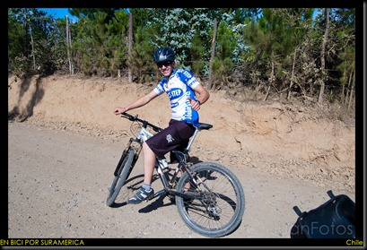
Muy temprano en la mañana me levante y desayune como de costumbre mi pasta con atún y me fue a buscar a Luis que pensaba que se iba a levantar tan temprano pero no fue así. Aunque no estaba listo estaba dispuesto acompañarme. Lo espero unos minutos y nos fuimos rumbo a un pueblo llamado Lipimávida, pero el camino como el mismo Luis me había dicho era bien duro. Estas subidas de tierra no terminaban nunca pero como tenia compañía no fue tan grave. Después de unas cuantas horas logramos llegar a la cumbre de una montaña donde se veía el Lago Vichuquén, luego que llegamos al pueblo el bombero decidió acompañarme un rato mas hasta que encontramos el asfalto que fue un LLoca un pueblo bien lindo a orillas de la playa y ya en esta zona se podría decir que encontré paz ya que las subidas terminaron J.
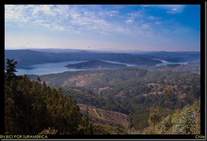
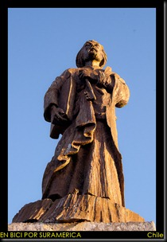
Luego de andar unos 98 km logre llegar a Constitución, un pueblo bien golpeado por el terremoto de febrero del 2010, fui a pedir ayuda a los bomberos nuevamente pero esta vez no tuve tanta suerte, igual el cuartel estaba todo destruido y ellos se encontraban en un lugar que les habían habilitado. Así que empezar a buscar y a preguntar pero no tuve ninguna respuesta positiva así que me fui a buscar una pequeña residencia por la cual tuve que pagar 14 dólares, pero pude descansar y logre comunicarme con Paula la hermana del Líder y quedamos en encontrarnos en el Parque Nacional Las 7 Tazas.
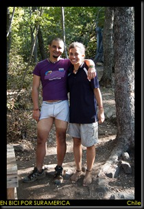
Al día siguiente me fui hasta Pelluehue que estaba a unos 77 km, aquí me recibió la familia de Claudio un amigo de Paula. Sus padres con mucho cariño me atendieron muy bien y me contaron como la pasaron mal el día del terremoto y los días siguientes. Cuando yo llegue al pueblo no vi ninguna secuela del sismo pero el papa de Claudio me conto que detrás de la calle donde me encontraron habían 4 calles más y ahora solo es arena. Me pude dar cuenta que la gente que vivía por esta zona de Chile ya a más de un año del terremoto no lograba superar el trauma que les causo y no es para menos.
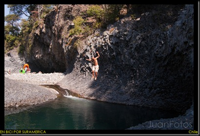
A la final deje La Burra en casa de los papas de Claudio y me fui en bus a encontrarme con Paula, y por poco me deja en bus. Al encontrarme con mi hermana (Paula) nos dimos un gran abrazo y fuimos a comprar comida y un poco de vino claro está. Este parque se llama Las 7 tazas porque es un rio que va cayendo en varias pozas como en pequeñas cascadas, pero lastimosamente con el terremoto (según la gente) las Tazas se vaciaron, pero lo que sí es cierto es que estaban vacías, así que no fuimos a otro sector del rio en el cual montamos nuestro camping y pasamos una noche súper agradable yo contándoles sobre mi viaje.
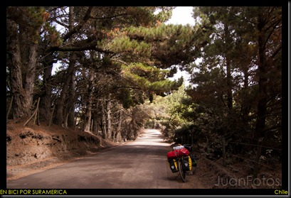
Una vez ya de regreso en casa de los papas de Claudio descase un poco del largo viaje y al día siguiente seguí mi ruta hacia Concepción donde me volvería a reunir con Héctor el gran panal y por tal razón salí con una energía que rodé unos 92 km los cuales los primeros 60 fueron mixto (pavimento y tierra) pero fáciles, es decir, sin mucha subidas fuertes, pero los otros 32 fueron mata piernas y lo peor de todo fue cuando se me acabo la carretera y me dijeron que tenía que agarrar un crucé e iba a tener que dar una vuelta para cruzar un rio de 30 km más. Pero no me rendí y camine 1 km por la playa empujando la bici por la arena hasta que llegue orillas del rio y hable con unos pescadores para ver si me podían cruzar y ellos muy amablemente no pusieron ningún problema, solo que tenía que esperar que ellos terminaran su faena de trabajo. Ya del otro lado del rio tuve que empujar otro kilometro mas para llegar a la carretera pero estaba tan cansado que le pedí a uno de los pescadores para que me diera un chance de dormir en su casa y hasta ducha caliente y cama me dieron.
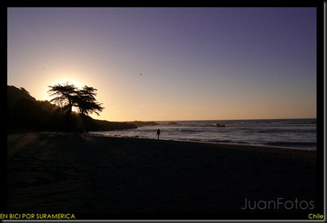
Al amanecer ya estaba yo listo para seguir con mi ruta y ya sabía que llegaría a concepción pero por mas enérgico que me sentía las grandiosas subidas me volvieron a golpear y no fue hasta un pueblo llamado Dichato (también golpeado por el tsunami) que logre encontrar asfalto pero nada plano. Lo bueno es que rodaba mejor y lo malo que el calor se triplico. Luego de 6 horas sobre la bici por fin llego a la de Héctor quien me estaba esperando con un Gatorade bien frio.
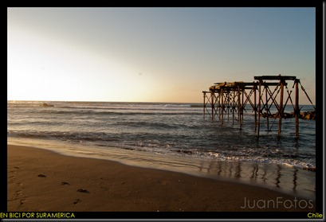
Ya en tranquilo en la casa de Héctor sin tener que pagar o incomodar a nadie me dedique a buscar una carpa para remplazar la mía que ya no me resistía el agua y la gran solución fue comprarla en U.S.A. y que me la mandaran. Grave error, pero valió la pena pues pase 20 días disfrutando de un merecido descanso. Y pude conocer mejor la cuidad, y las áreas verde que bien mantenidas las tienen y gracias a que la pase tan bien que es una de la ciudades que más me ha gustado del viaje.
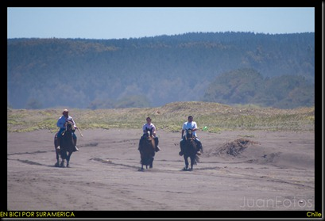
Continuara…
Categories: Uncategorized
Luego de estar un buen tiempo en Concepción y en Santiago ya era hora de seguir mi camino. Una vez ya listo me dirigí a La Calera donde había dejado la bici, hice mis compras respectivas y a dormír tranquilo.
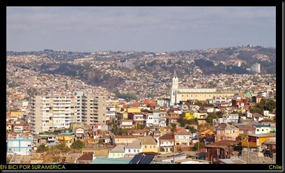
Buen día para pedalear destino Valparaíso y para suerte mía aun estaba en condiciones aunque a los pocos kilómetros recorridos escuche un pequeño ruido en la rueda trasera, un rayo, pero bueno nada que no pudiera solucionar, medio enderece la rueda y así seguí mi ruta la cual era bien aburrida. Autopistas con carros que me pasaban con todo su ruido, pero más pesado se puso cuando en un peaje no me dejaron pasar y me dijeron que tenía que tomar la ruta nacional, esta se trata de una carretera vieja y angosta por donde pasan todo los buses interurbano ya que no pueden darse el lujo de pagar los costosos peajes!
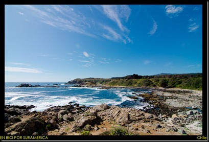
Listo ya en Viña del Mar, casa muy bellas junto a las frías playas del océano pacifico y de un momento a otro que no sabes cuando entras a Valparaíso una cuidad mas de estudiantes y de una vida más bohemia con grandes subidas y muchas casas juntas en los cerros. Aquí me recibe Pablo Ortiz un amigo músico con ganas de compartir conmigo su casa mientras yo termino de arreglar mi bici. Y para mi gran sorpresa puede encontrarme con mi hermana Paula Gómez (hermana de El Líder). Luego de pasar dos noche en Valparaíso y conocer la un de las casas de Pablo Neruda me dirigí a Quintay por la recomendación de otro ciclista que se encontraba allá. Pensé como siempre que iba a ser fácil ya que quedaba cerca en relación con las otras distancias que ya manejaba pero salir de la ciudad no fue tarea fácil, pues son una subidas como si fuesen hechas en contra de los ciclistas hasta tuve que bajarme un par de veces a empujar la bici.
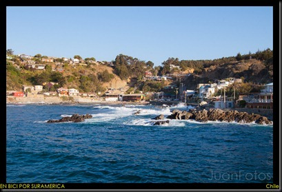
Quintay es una caleta de pescadores que cerca al año 1900 se fundó unas de las balleneras más grande e importantes de Chile. En este hermoso pueblo fui muy bien recibido por el Italiano Alessandro Alessandrini otro cicloviajero junto con el Figura (Mauricio Álvarez) dueño de la casa donde está El Palomito, el único kiosco de comida rápida que funciona en Quintay. Podría decir que es unos de los lugares que siempre querré regresar. Es un pueblo que está lleno de bosques de pinos (todos privados), con una playas hermosas, con gente magnifica, y en especial todos los perros de la casa. Cada vez que podía me iba con el italiano a limpiar la playa y no puedo olvidar que en una ocasión una familia nos pregunto por qué hacíamos eso, si por trabajo o por reciclar, a lo que contesta el Alessandro: “para que no se vea sucia una playa tan linda” con esto el papa le dice a sus hijas vamos a colaborar con ellos así que cada quien recoja un papel, para nosotros fue imposible no reírnos pues la playa estaba llena de basura y ellos solo querían recoger un papel pero de igual manera la ayuda fue muy bien recibida. Justo cuando nos íbamos con dos bolsas negras de basura cada uno nos volvemos a encontrar a la familia y el padre dice: “un aplauso para los muchachos” y a lo que El italiano responde: “No, Los Aplausos no sirven de nada”, una frase que nuca olvidare.
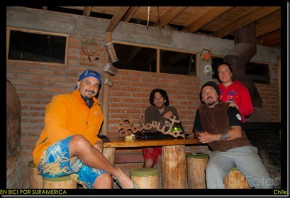
Después de veinte días en Quintay, sin hacer ejercicio y de haber pasado por una conjuntivitis me hago de voluntad para seguir el recorrido. Nos es mucho lo que recorro, 18 km, pero llego a una playa hermosa, Playa Tunquén, donde me quedo en la orilla de la playa vacilando el atardecer. Aunque esos 18 km fueron bastante duros ya que estas costas están llenas de subidas con grandes grados de inclinación.
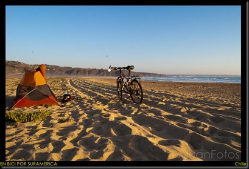
Ya tratando de agarrar el ritmo seguí hasta San Antonio, esta es una ruta de muchas subidas fuertes que más rápido se me agotaba la paciencia que las fuerzas. En esta ruta pase cerca de otras de las casas de Pablo Neruda y por lugares muy bonitos, los cuales solo son casa y apartamentos de veraneo de gente con grandes poderes adquisitivos.
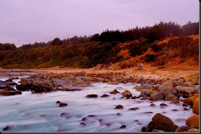
A la final pude llegar muy cansado y me fui rápidamente para los bomberos para probar mi suerte y la primera respuestas fue que no. Pero no me fui, me quede hablando y charleando hasta que uno de los bomberos me dijo bueno pasa pero vamos a guardar tus cosas en un cuarto y sales a recorrer y te vienes a las 9 de la noche cuando ya estemos seguro que el jefe no vendrá pero eso si te tienes que ir temprano de la mañana, jejeje, y yo por supuesto no puse ningún problema e hice todo como me dijeron.
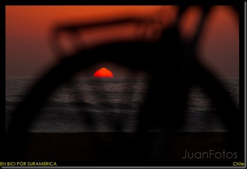
Muy temprano de la mañana como se suponía salí del cuartel de bomberos de San Antonio con destino a un pueblito llamado Navidad, y este ha sido unos de los días más raros que he tenido en el viaje de cierta manera. Después de haber recorrido unos 40 km me pasa una camioneta y se para de una manera muy rara y cuando me doy cuenta en un niño manejando con su papa al lado y el hombre me llama y me pregunta que a donde voy y le digo que a Navidad y él me dice tranquilo yo te llevo, a lo que le respondo no señor tranquilo solo me faltan 10km que no es nada, el insistió de tal manera que bueno dije vamos pues. Y me tranquilo que manejo yo, y en el camino me dice: “mi hijo manejaba porque yo me torcí un tobillo y me duele al manejar” y cuando me cuenta toda la historia de lo que le había pasado ya me quería bajar. Y por supuesto el señor se había tomando el día anterior varias cervezas. A todas estas en medio camino me pregunta que si yo sé manejar jajaja, ahí me di cuenta por donde venia el asunto, así que de un momento a otro pase de manejar una bicicleta a manejar una camioneta por carreteras chiles y los mas chistoso era que aun cargaba mi casco. El señor vomito por todo el camino mientras que el hijo (Lukas) y yo hablamos para disimular la parte. Y de pronto se escucha huuuugooooooo (sonido típico al vomitar) y después disculpa juansito! Jejeje no me lo podía creer. A la final de todas termine durmiendo en su casa y cocinándoles!
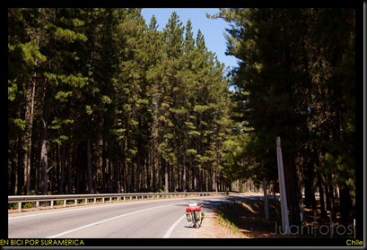
Al día siguiente sin que nadie me escuchara me levante, comí y me fui ruta Pichilemu, y la ruta nada que cambiaba, parecía una montaña rusa, pero supe pedalear muy bien que me hice unos 87 km. Pichilemu es bien es un pueblo bien conocido por los surfistas, ya que muy cerca se encuentra una playa llamada Punta de Lobos, por lo que el pueblo es bien turístico y lindo. Cuando llegue bien cansado me fui directo a los bomberos quienes me atendieron muy bien. En cuartel jugué billar, me cocinaron, salí a pasear por ahí y realmente la pase muy bien, pero sin tiempo para el descanso al día siguiente salí bien temprano como ya me era costumbre.
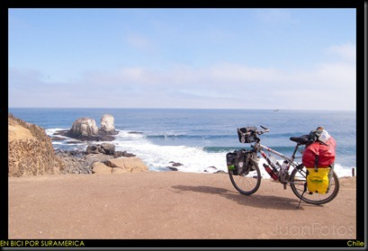
Continuará…
Categories: Uncategorized
Luego de haber rodado mucho kilómetros por Argentina era hora de volver a Chile, lo que significaba volver a cruzar la cordillera de los Andes, esta vez por un camino asfaltado y muy transitado por camiones pesados. Tuve que pedalear mucho antes de poder salir realmente de la ciudad y en el camino me encontré un ciclista mendocino que me ayudo con varios atajos con menos tráfico vehicular. Este día me sentía bien casando ya que el día anterior había rodado un poco mas de 180 km.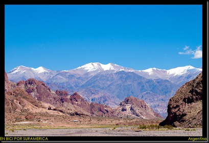
El sol estaba haciendo su trabajo mientras yo tras cada pedaleada subía la cordillera, pero no fue hasta que llegue a Potrerillos que me rendí, había rodado unos 67 km, estaba realmente cansado. Este pequeño pueblo era semi-turístico ya que contaba con un embalse donde muchas personas iban a navegar barcos de vela, tenía sus balnearios y se hacían varias excursiones a caballo. Busque una zona de camping donde me reuní con varios artesanos y malabaristas y la pase muy bien.
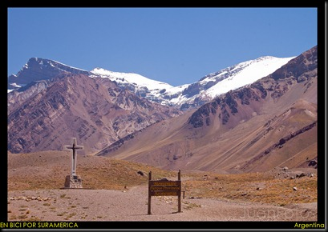
Al día siguiente, 12 de enero, bien temprano en la mañana seguí subiendo y enfrentándome al tráfico tan pesado que concurría en esta vía. Me sentía en mejores condiciones que ayer así que llegue rápido a Uspallata donde había decidido parar a dormir. Comí y descanse un poco y sin pensarlo mucho seguí subiendo esperando encontrar otro lugar donde pasar la noche. Luego de haber pedaleando 93 km llegue a Polvaredas un pueblito muy pequeño, donde había una sede de vialidad al que fui a pedir un lugar donde pasar la noche. Luego de haber salido de Uspallata me azotó un poco el viento y tuve que pasar alrededor de 13 túneles aunque cortos pero igual oscuros con mucha brisa y en ocasiones con camiones. En esta sede de Vialidad me abrieron las puertas de manera muy amable y tuve la suerte que me ofrecieran cama, direct tv y acceso a la cocina jejeje.
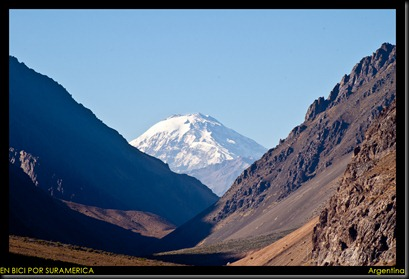
En la mañana siguiente salí bien desayunado con ánimos de cruzar la cordillera hacia el otro lado por lo que pedalee con bastante ánimo aunque el viento si esforzaba por quitármelos y cada vez las pendientes eran más intensas aunque nada comparado con lo que ya había vivido. El primer pueblito que pase fue Punta de Vacas, este pueblo vive del turismo más en época de invierno ya que aquí se encuentran centros de esquí. Ya es posible ver el Aconcagua, el pico más alto de América según tengo entendido con una altura de 6959 metros sobre el nivel del mar (m.s.n.m). El paisaje era realmente bello y me hubiese gustado disfrutarlo más pero mi humor no era el mejor gracias al viento y la gran cantidad de tráfico. Kilómetros después pase por Puente del Inca, lugar donde venden mucha artesanía y según cuenta la historia pasaban los incas por un puente de piedra realmente hermoso que parecer se formo de los sedimentos al pasar los años.
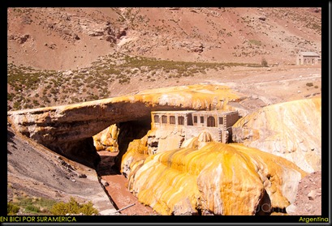
Por fin llegue al punto de vialidad Paso Libertadores, aquí tenía que esperar que un carro me pasara hacia chile ya que venía un túnel llamado Cristo Redentor de 3 km de longitud y aunque quisiera cruzarlo en bici esto era prohibido. Al pasar unos 20 min llegó una camionetica de vialidad y sin costo alguno me pasó a territorio chileno. Y para mí felicidad venia solo bajada y la famosa bajada de los caracoles.
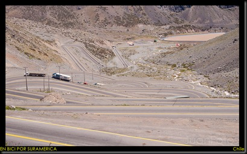
En este descenso interminable me encontré a dos parejas de ciclistas subiendo, me paré para hablar un poco, una de las parejas eran de Canadá con aproximadamente 60 años de edad y tenían como destino llegar a Ushuaia pero por Argentina únicamente en solo 4 meses y la otra pareja era de hermanos que solo estaban probando este sistema de viaje (cicloturismo) y viajaban solo de Santiago de Chile a Mendoza de Argentina, bien por ellos. Por fin llegue a los Andes y bien cansado pues había estado sobre la bici 8 horas y logré hacer unos 115 km. Rápidamente me fui a los bomberos y muy amablemente ellos me aceptaron brindándome todo su apoyo.
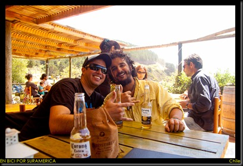
Luego de haber descansado un poco llamé a Héctor Pérez (fue así), mi amigo de Cumaná que me estaba esperando prácticamente desde que salí, el se encontraba en Concepción una ciudad que está aun bastante al sur de chile por lo que al día siguiente me fui hasta otro pueblo llamado La Calera de donde es Indira mi excompañera de viaje chilena. Allí dejaría la bicicleta y tomaría un bus hasta Concepción.
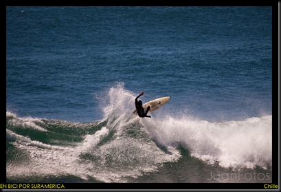
Llegue a La Calera bastante rápido aunque igual fueron unos 73 km pero prácticamente en bajada, pude contactar a la familia de mi amiga, bañarme en su casa, dejar la bici y tomar un bus hasta Santiago y de allí tome otro hasta Concepción. Ya en el terminal de Concepción pude encontrarme con Héctor y fue una alegría tanto para él como para mí, ya que nos encontrábamos tan lejos de nuestro país, de nuestra gente y por fin teníamos a alguien para apoyarnos mutuamente. Ese mismo día nos fuimos por unas cervezas y pudimos hablar como era debido jejeje. Ya en la semana cuadramos con sus amigos y nos fuimos a la playa, Cobquecura, donde fue el epicentro del terremoto del 27 de febrero del 2010. En una playa llamada Buchupureo alquilamos entre todos una cabaña donde pasamos 4 noches calidad!
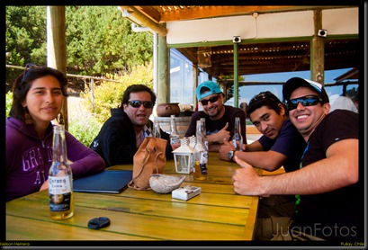
En estas 4 noches hicimos parrilla, bebimos cervezas, el pana Nelson y Klen (amigos trompetistas de Héctor) se metieron a la playa con el bodyboard. Yo intente meterme a darme un baño pero con los 9 grados Celsius que tenía el agua solo me dio por meter los pies. Las olas estaban gigantes tanto así que en ocasiones nadie se pudo meter, cuando me refiero a nadie es que ni los surfer Pro que venían del extranjero pudieron. Las playas que visitamos fueron Buchupureo y Pullay
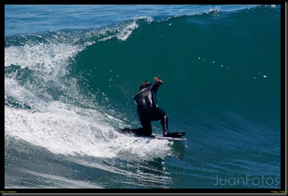
Ya de regreso a Concepción Héctor tuvo que arreglar todo porque se regresaba a Venezuela por vacaciones pero no antes de ir a Valdivia para presentar una audición. Yo me tenía que regresar a Santiago para hacer unos trámites en la embajada.
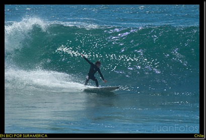
En Santiago me recibió Nico un amigo recomendado por Dira Martínez, con el cual me la lleve genial. Nico tiene una librería-café pequeña donde te puedes sentar a leer un libro sin necesidad de pagar nada. La idea es que la población retome la lectura, pero no una lectura técnica sino una más poética. En Bukster (nombre de la librería) aprendí muchas cosas sobre la literatura latinoamericana
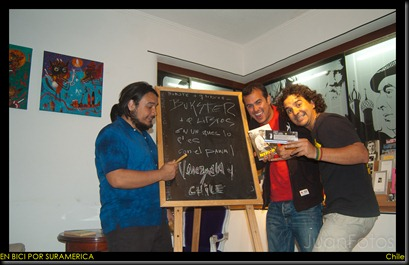
Luego de pasar un buen tiempo disfrutando de mis amigos y descansando de la bici ya era hora de volver al pedal y seguir mi ruta hacia el Sur!
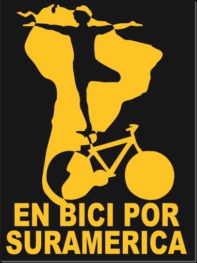
Disculpen el abandono pero aquí seguimos!
Categories: Uncategorized
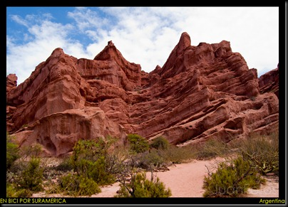
Por fin pude lavar toda la ropa en Salta, ósea un buen lavado. Estuve en esta ciudad 4 noches donde pude ponerme al día y planificar mi próxima ruta hacia San Juan por la ruta 40. La ruta 40 es muy famosa por ser la carretera más larga de Argentina ya que recorre de norte a sur todo el país y el saber que iba a estar rodando por aquí ya era un gran avance.
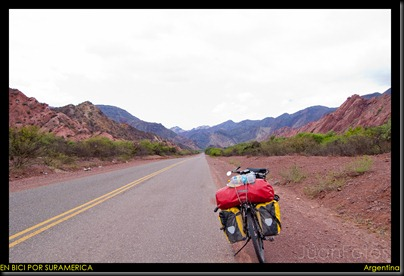
Empieza nuevamente mi día a día, pedalear, esta vez directamente hacia el sur, el camino por fin era plano con buen asfalto. Comencé a rodar por lo que llaman la ruta del vino, pues hay bastantes viñedos y mucho tabaco, la temperatura es un poco alta y más que ya estaba adaptado al frio del altiplano. Este día rodé casi 100 km, tiempo sin rodar tanto y tan rápido, pero las condiciones geográficas se prestaban para hacerlo. Llegue a un pueblo llamado La Viña; en casi todos los pueblos de Argentina podemos encontrar campings municipales donde se puede pasar la noche con la carpa sin tener que pagar, lo cual me convenía mucho y La Viña no fue la excepción. Pude pasar una noche tranquila sin mucho frio, viendo los partidos de football de un campeonato local de niños menores de 8 años.
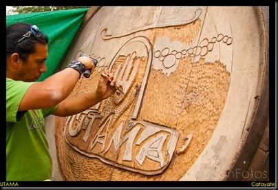
La mañana siguiente después de un buen desayuno me dispongo a pedalear con idea de llegar a Cafayate bien conocido por sus vinos, viñedos, bodegas y lugares turísticos para visitar. El camino fue algo pesado por el sol, mucho calor. Pase por muchos lugares bastantes curiosos, con una variedad geográfica bastante interesante, unas de las que me llamo la atención fue la Garganta del Diablo que no es más que un cañón entre las montañas creado por el agua atreves de los años, también pase por Casas de Loros, una roca con una gran cantidad de huecos donde mucho loros anidan y/o viven, Los Castillos, formaciones rocosas de color rojizo intenso que dan idea de una gran fortaleza. Luego de unos 100 km y algo logré llegar a Cafayate un poco cansado y muy acalorado y rápidamente me fui hacia información turística preguntando donde quedaba un viñedo artesanal llamado Utama, que me había recomendado uno de los dueños que conocí en Perú. Fácilmente pude llegar y hable para quedarme unos días ya que era 23 de diciembre y quería pasar la navidad en lugar agradable jejeje. Amablemente Mau, la dueña, no tuvo problema para darme un lugar donde poner mi carpa y rápidamente me integró al grupo que estaba allí. Utama es una granja orgánica donde participan personas voluntarias a cambio de conocimiento, estadía y comida. Por lo que me encontré con 3 franceses, 2 estadounidenses y una canadiense más los trabadores de la granja.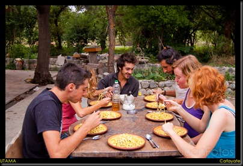
Los vecinos a la granja también vinieron a festejar las fiestas en Utama. Tuvimos una navidad llena de comida, muchas risas y mucho vino, era un encuentro internacional y el intercambio cultural fue impresionante al cual le saque mucho provecho. Luego de que terminó la comida y casi todo el vino nos fuimos a la rumba de la ciudad y ya temprano por la mañana fue que me pude acostar en mi carpa ya todo vuelto….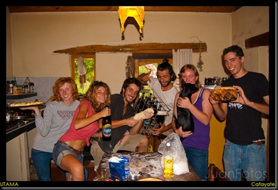
Después de descasar dos días de la gran fiesta fue hora de seguir hacia el sur ya por la muy nombrada Ruta 40. Esta ruta presenta una variedad de paisajes pero la gran mayoría es desierto con mucha brisa en contra a partir del medio día. Fueron 100 km los que rodé hasta llegar al pueblo de San José, el camino fue algo de asfalto (30km) y luego empezó algo de tierra ya que este tramo estaba en construcción. El sol fue implacable pero sin mucha brisa para mi suerte. Ya listo para buscar donde acampar me fui a comprar algo de comida para cocinar y la señora que me atendió tuvo una facilidad para meterme miedo de que habían gente mala por ahí y toda la historia que siempre me cuentan pero en este momento no me gusto así que sigue pedaleando hasta que encontré una casa que me pareció la ideal para pedir un permisito para acampar. Tan a gusto pase mi noche en ese lugar que me desperté un poco tarde para lo que ya me había acostumbrado y también porque la brisa empezaba en la tarde. 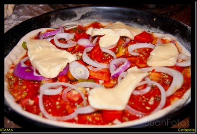
Por la pereza de no levantarme más temprano pague el alto precio de una brisa bastante fuerte que después de mucho esfuerzo, de arena en mis ojos y la monotonía del paisaje árido tuve que darme por vencido a los 55 km donde había un casa que al parecer estaba ahí para ayudarme a resguardarme de la brisa. Pero no todo fue así de simple, el lugar que me facilitaron era un antiguo refugio para la gente que con el tiempo se había convertido en uno para ovejas, así que tuve que dormir prácticamente sobre sus excrementos.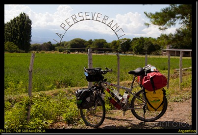
Aprendí la lección, pues al día siguiente muy temprano ya estaba despierto cocinado mi gran desayuno (pasta con jurel) y listo para continuar con mi trabajo diario, pedalear y pasarla bien jejeje. Luego de unos 40 km empezó un camino de tierra un poco malo que continuo por unos 50 km más. En camino aunque desértico no fue tan aburrido pues hubo subidas buenas, montañas lindas, y tuve que parar a reparar un neumático que se me había desinflado y una alforja la cual perdió dos tornillos importantes. Después reparar y seguir el camino empezó nuevamente el asfalto y todo se hizo más fácil jajajaj. A pocos kilómetros me encontré un español que venía desde el sur con el cual pase unos 45 min hablando. Hasta que llegue a Belén fueron uno 116 km sin mucha brisa, fui a tomarme una coca-cola para rehidratarme jajaja y un helado para renovar todas mis energías perdidas. Llegue a una casa a pedir que me dejaran armar mi carpa y pasar la noche, mientras cocinaba empezó a llover de una manera impresionante y me demostró que mi casita ya no era a prueba de aguaL. Los dueños de la casa muy amablemente me ofrecieron que me alojara en una casa en construcción de un familiar de ellos para resguardarme de tanta agua que no paró durante la noche.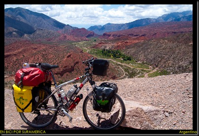
Desde Belén seguí mi travesía por la ruta 40 hacia el sur, por esta zona ya había mucho mas arboles, un poco menos calor y viento. A esta altura ya había recorrido varias provincias de argentina y según los pobladores estaba pasando por una de las más lindas del norte de argentina, San Blas, al parecer es un clima de arboles y abundante vegetación gracias a varios ríos que pasan por la zona. Me quede en una población muy pequeña llamada Andolucas en el camping municipal junto a una pareja de artesanos con quienes compartí muy agradablemente el resto de mi día hablando de la situación social en general y bebiendo mate. 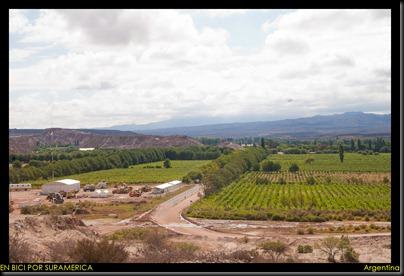
Último día del 2010, camino a Chilecito, me toco una subida muy suave pero bastante larga aparte de que estaba cansado del día anterior por lo que fue algo pesada. Aquí el sol me acompaño todo el día brindándome mucho calor. Realmente no disfrute mucho este camino por mis condiciones, sentía mucho deseo de terminar este día. Después 110 km llegue y sin pensarlo mucho llegue a un hostal para no estar molestando a persona en un día como estos (fin de año). En el hostal me encontré con dos alemanes que viajaban en moto así que con el pasaría el año nuevo con ellos. Fuimos y compramos una botella de vino, pan, jamón y queso y con eso hicimos nuestra gran cena. Después de escuchar todos juegos artificiales y hablar con mi familia me fui a dormir ya que estaba algo cansado. Al día siguiente, 1 de enero del 2011 a un año de mi partida de en bicicleta a eso de las 6 am de la mañana me despierta un temblor algo largo jajaja por lo que pensé; que buena manera de empezar el año. Aunque tenía la idea de seguir preferí quedarme un día más descansando y comiendo helado. 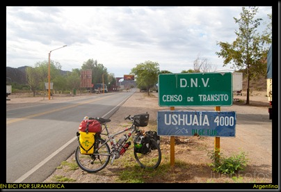
Nuevo año y con pilas nuevas seguí mi camino con la meta del día de llagar a Villa Unión la cual logré después de pedalear 113 km y pasar por la cuesta de Miranda la cual es de tierra, con grandes subidas pero con un paisaje espectacular. Logre hacer camping al lado de una estación de servicio de Villa. Al día siguiente salí hacia Huaco sin haber comido mucho y buscando donde desayunar. Después de unos 45 km encontré un pueblo llamado Guandacol y me comí dos sándwich mas mi respectivo postre para después seguir pedaleando hasta que me encontré un francés que viaja también en sentido contrario al mío, estuvimos hablando por un buen rato, el explicándome lo que me venía y viceversa. Después de unos cuantos kilómetros más me encontré con otro cicloviajero alemán que viajaba hacia el norte también con el que hable pero no mucho, ya sentía que iba un poco tarde y el viento me podía regañar jejeje. No fue hasta que rodé unos 125 km que llegué a Huaco donde me dirigí a un puesto policial que me dio permiso para acampar al lado de la estación debajo de un camión para protegerme de una supuesta lluvia.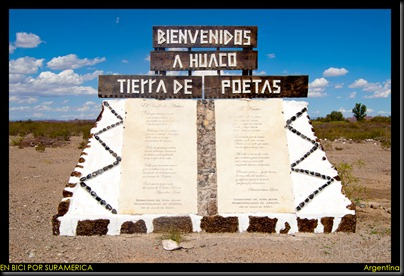
Después de arreglar todas mis cosas empezaron a girar mis neumáticos pero tan aprisa como quisiera, la subida que me toco aunque era de asfalto no fue tan fácil, pero nada comparado con Bolivia, etc. Sin ser muy larga me pare en la cima a tomar unas fotos para ustedes mientras otras personas me preguntaban lo de siempre. Empezó el descenso relativamente relajado, en un camino desértico, con muchas capillas de la virgen de la Difunta Correa, la cual según la historia murió de sed en el desierto argentino. Luego de unos 70 km me paré a comer algo cuando se pararon una pareja de argentinos que también viajaban en bici, según mis cálculos especuladores, la pareja era de una edad entre los 40 y 50 años, lo cual me pareció excelente. No paso mucho cuando me encontré pedaleando contra mi mejor amigo o mi peor enemigo, el viento, me recordaba cuando pedaleaba por Bolivia con la diferencia que no había subida y todo estaba asfaltado. No podía creer que no podía pedalear mas, de verdad que es una lucha contra ti mismo ya que tu humor se vuelve un poco pesado y hasta comienzas a hablar con no sé quien casi que maldiciendo todo L, aquí es donde viene el aprendizaje del viaje, tratar de controlar todos estos impulsos y lograr superarlos sine entrar en conflictos, es fácil decirlo pero hacerlo después de varios días viendo un paisaje medio monótono, sin hablar con mucha gente y un sinfín de cosas que te pasan por la mentes cuantos cuando viajas. El hecho fue que decidí parar porque estaba haciendo un esfuerzo grande sin avanzar mucho así que preferí relajarme y seguir mañana con mejor humor jajaja. Y como siempre me premia el destino cuando tomo decisiones como estas apareció un refugio de la Difunta Correa.
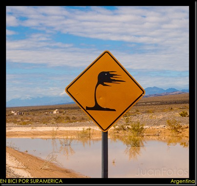
En el refugio había un colchón tirado en el piso, unas paredes de lata (especie de bambú), electricidad, una mesa y un viento que me tenía loco. Dos horas luego de haberme parado empezó lo que yo llamo una tormenta de arena que me tuve que esconder en el saco de dormir para salirme de él unas 10 horas después cuando amaneció, con todo cubierto de arena. Así que tuve una nueva vivencia en el pueblo argentina que no había tenido nunca en mi vida.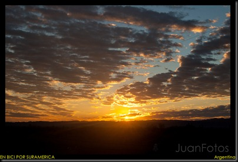
Sin comer nada empecé a rodar hasta el pueblo que quería llegar el día anterior Talacasto. Fue aquí donde desayune y empecé mi ruta hacia San Juan y que después de una gran subida y unos 112 km llegue. Estaba cansado de rodar tantos kilómetros por tantos días y de aquí pensaba hacer mi ruta hacia Chile, pero no todo fue como imagine. Aquí pensé que terminaba esta etapa de la ruta 40 y continuaba por la ruta 12 que se internaba en la montaña pasando por un parque nacional y un observatorio, pero al averiguar bien me entere que esta ruta estaba cerrada desde hace 10 años, no entiendo como sabia yo de que esta ruta existía jajaja. Pase 4 noches en el hostal San Juan en el cual conocí mucha gente que viajaba y compartí con varios de ellos mientras me alimentaba y cambia mi menú diario jejeje. 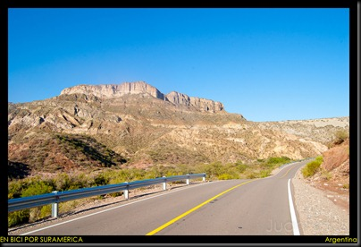
A la final decidí seguir hasta Mendoza por la ruta 40 y de allí tomar el paso más concurrido de Argentina-Chile, paso Libertadores. Sabia que me enfrentaría a mucho carros y muchos camiones pero bueno así es la vida del ciclista. El 10 de enero salí hacia Mendoza lo cual hice en un dia rodando unos 183 km por lo cual quede muerto y en si no me dio tiempo de conocer nada de según la gente tan hermosa ciudad.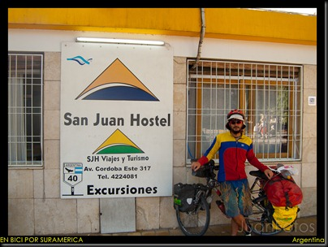
Ya en Mendoza termina esta etapa sobre la famosa Ruta 40, que de seguro tendré que retomar más al sur del País. Saludos y hasta una próxima edición jejeje.
Categories: Uncategorized
San Pedro de Atacama es un pueblo muy turístico, con bastantes lugares por conocer, extranjeros por todos lados y por ser verano muchos chilenos. Por estas circunstancias el costo de la vida es muy elevado y para nosotros que veníamos de Bolivia, el país más económico de Suramérica, fue un choque muy fuerte económicamente hablando. Pero a pesar de todo esto la suerte nunca nos abandonó y gracias a Jes (posiblemente Jesica), una local, que nos invitó a dormir a una casa que tenia la cual aun estaba en construcción no tuvimos que pagar hostal. Estaban construyendo una casa de adobe con un estilo típico de una zona de Bolivia pero que fuese sustentable y se puede decir que estaban haciendo un buen trabajo.
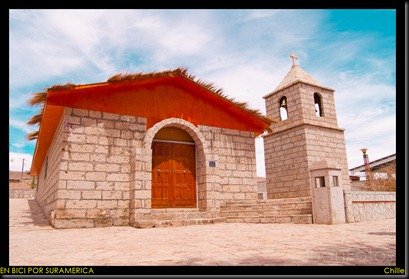
En San Pedro pase unos 4 días descansando de la gran travesía que me había consumido muchas energías. Aproveche de actualizar el blog y ponerme en contacto con mi familia ya que tenía internet después de casi 20 días sin ningún tipo de comunicación. Y también aproveche de planificar mi próxima ruta. Y terminó siendo la siguiente: San Pedro, Toconao, Socarie, Salar Aguas Calientes, Catúa y desde acá no sabía bien cual ruta tomar.
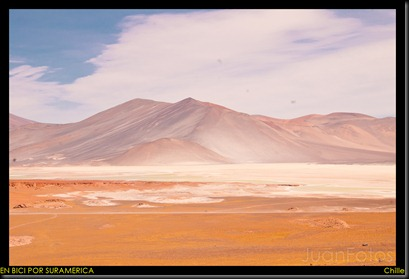
Después de viajar casi tres meses con Marc e Indira era hora de seguir mi camino solo, ya que teníamos tanto planes como viajes diferentes. En fin me despedí con un fuerte abrazo y dándole las gracias por todo lo que me habían enseñado. En cierta parte estaba triste pues ya me había acostumbrado a ellos y por otra estaba emocionado porque iba a aplicar todo lo que aprendí de este par de viajeros que ya tienen más de 2 años en el negocio.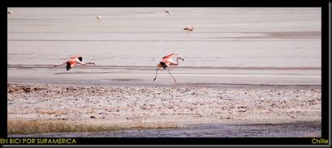
No tan temprano en la mañana salí de San Pedro y que silencio había jajaja de verdad sí que me había acostumbro a ir acompañado, pero bueno así es la vida no? En la mitad del camino me pregunte que si abría puesto de migración en Paso de Sico frontera Chile- Argentina. Este día no rodé mucho solo hice 50 km tomando en cuenta que fue bajando y todo asfaltado. Al llegar fui a preguntar a la policía donde podía sellar pasaporte y como lo había sospechado tenía que volver a San Pedro lo cual me parecía una locura ya que la frontera estaba a 210 km de San Pedro. Estuve en la plaza central por un buen rato pensado que hacer, si regresarme en bici o en colectivo. Pues busque un hostal y pregunte a qué hora salía el bus. A las 6 y media tenía que estar en la calle esperando que pasara pero por problemas técnicos llegue una hora tarde, pues Chile tiene una hora más que Bolivia y fue un detalle que me dio más problemas de lo que pensé porque fue a las 7 y media cuando salí a buscar el bus y por supuesto que ya había pasado así que me fui a la carretera a hacer dedo (pedir una cola) y después de 40 min se paró una camioneta y nos fuimos. Ya llegando a San Pedro vi el último bus que se regresaba hasta Toconao y ya eran las 8 y media de la noche que acá sigue habiendo luz.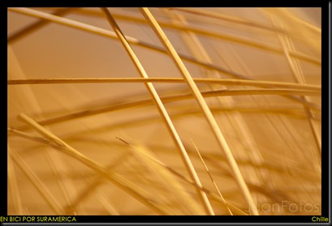
Selle mi pasaporte con salida de Chile (210km antes de la salida) y me puse a hacer dedo pero fue inútil ya era de noche, así que regrese aquella casa donde estaban los muchachos jajaja y bueno se podrán imaginar la impresión de ellos al verme nuevamente allí. Hablamos un rato y a dormir, ya que tenía que madrugar para poder regresar temprano y de una vez seguir mi camino hacia Socaire.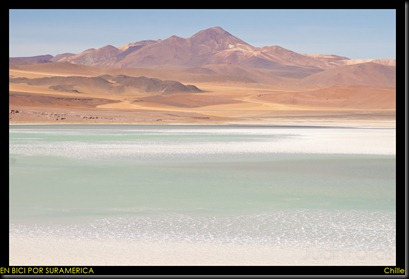
El camino a Socaire si empezó con una subida muy leve y agradable. Todo con muy buen asfalto y nada de brisa. Pero igual no avance mucho ya que este iba a ser el último pueblo en unos cuantos días y tenía que comprar algo de comida y descansar porque desde el día siguiente volvería a las carreteras de tierra aunque según otros viajeros estaba en perfectas condiciones. Llegue temprano después de rodar unos 60 km y me fui a la plaza central a ver como se movía el pueblo. Muy gentilmente un carro que pasaba y se paró a regalarme un helado de mango jejeje que éxito de mango. Luego de comerme unos panes con jamón y queso que había comprado en la mañana busque donde quedarme a pasar la noche, aquí fue donde aplique lo que había aprendido con los muchachos. Casi que lo que hice fue imitar a Marc y muy amablemente me dieron un lugar agradable donde poner mi colchón inflable a parte de acceso a un baño, pues no me podía quejar.
Bien temprano en la mañana, ya listo seguí mi camino, no sabría hasta donde llegaría pero de seguro al Salar de Aguas Calientes. El camino que según estaba en buenas condiciones puso a prueba mi paciencia. Por momentos pensaba que estaba en Bolivia que no había salido aun de aquella terapia, pero eso si muy pero muy lindo el camino. Había muchos colores y pude ver varios animales, el cual uno de ellos me pareció como un avestruz, vi manadas de Vicuñas (http://es.wikipedia.org/wiki/Vicugna_vicugna), etc.
El Paso de Sico se encuentra a unos 4100 metros de altura y ya estaba a unos 3900 m.s.n.m a pesar que aun me faltaba bastante distancia por recorrer. Por lo cual me imagine que una vez arriba no sería tan complicado pasar al otro lado de la cordillera. Pero una vez más subestime el camino, ya que este día (día siguiente después de Socaire) tuve que subir a 4175 metros de altura y luego una baja increíble por un camino espantoso, tanto así que se me cayó un zapato y una sandalia de la bici y para colmo del mismo pies. Por lo que solo me había quedado con un solo zapato una sola sandalia, una perdida que realmente me dolió ya que sabía que implicaría un gasto con el que no contaba. En fin después de pedalear por unos cuantos kilómetros hasta el Salar de Aguas Calientes que fue realmente hermoso logre ver un letrero que decía que a 17 km mas estaba una mina, lo cual no me pareció lejos y no estaba tan cansado. Realmente no sé quien se encarga de medir o contralar este tipo de avisos viales pero luego de haber pedaleado 22 km desde el Salar de Aguas Calientes solo lograba ver una gran subida y ninguna mina jejejeje. Ya a las 7 pm que aun era de día, paré realmente agotado en unas piedras grandes donde podía acampar y refugiarme del viento.
Al siguiente día empecé a pedalear no tan temprano, pues me levanté tarde por el frio y el agotamiento del día anterior. Empezó la subida con mucha arena y calamina (ondulaciones de la tierra) muy lento pero bastante animado porque este día pasaría hacia la republica de Argentina. Luego de pedalear unos kilómetros más pude llegar la mina (35 km desde el aviso que decía 17). En la mina pude recargar agua para el resto del camino, unos 7 km mas y llegue a un puesto de la policía nacional de Chile, aquí tuve que mostrar mi pasaporte con el sello de salida (no entiendo porque en ese lugar no me podían sellar el pasaporte) y anotaban mi salida. Muy gentilmente me invitaron a pasar y me dieron un yogurt, naranjas y pan con mermelada con café, nada mal no?. Luego de responder las preguntas de siempre seguí mi camino. Once kilómetros después llegue a territorio Argentina donde me recibió la Gendarmería (equivalente a Guardia Nacional) y amablemente sellaron mi pasaporte con 90 días de permiso para estar en el país. Preguntando porque ruta tomar ellos me sugirieron pasar la noche allí y me invitaron a una cada con todas las comodidades que un cicloviajero añora. Aparte de darme mi primer asado argentino. Solo pensaba que buen comienzo en este país. Lo único malo es que no encontré cambio para la moneda, y según ellos no iba a encontrar hasta que llegara a Salta, la primera ciudad donde llegaría.
Al día siguiente muy temprano empecé a pedalear hacia Olacapato y como es de costumbre empezó la ruta con una subida no muy empinada pero bastante larga, luego me toco una semi bajada y luego subir hasta que llegue al pueblo a unos 4000 metros de altura. Aquí fui a la escuela donde me recibió un profesor que de casualidad también era aficionado a la bicicleta y me invitó a su casa donde tenía una cama disponible para mí. Me estuvo explicando la ruta que me venía y cuáles eran las mejores opciones.
Bien temprano después de desayunar unos huevos fritos, empecé mi viaje hacia San Antonio de los Cobres, igual todo empecé que una buena subida, igual caminos muy malos, viento en contra pero igual paisajes muy bellos. Subí hasta los 4500 metros de altura y empecé a bajar hasta que pude llegar al pueblo un poco cansado y con 23 pesos argentinos que me había regalado los papas del compadre Johnny antes de salir de mi casa. Ese dinero rodo 7000 km con un solo propósito, salvarme la vida jajajaja.
Al llegar a S.A.Cobres me fui hacia la plaza central a ver como se movía el pueblo, y como siempre se me acercaron personas a preguntar y fue donde una señora me sugirió ir al ejército a pedir un lugar donde dormir y eso hice. Muy amablemente me abrieron las puertas del cuartel y les plantee mi problema con la moneda lo cual entendieron bien y con gran gentileza se ofrecieron a ayudarme dándome la cena y el desayuno de la mañana siguiente aparte de una bolsa con frutas, panes y mermeladas. Estaba bastante emocionado con el recibimiento que había tenido en Argentina hasta el momento, y más aun sabiendo que el país donde termina la mitad de mi proyecto, llegar al fin del mundo, Ushuaia.
Después de una foto de despedida, jajajaja, empezó la subida y aun de tierra, no podía creer que todos los días tuviese que subir tanto. Siempre me imagine que subiría y bajaría al otro lado de la cordillera. Así que entendí que la cordillera era grande y tenía su dificulta y más cuando los caminos son de tierra. En fin tuve que subir hasta los 4080 m.s.n.m y hasta que por fin encontré asfalto y la bajada que me llevaría a Salta, ¡que felicidad! Pero como siempre no todo es color de rosas, cuando empecé a bajar con la sonrisa en mi cara empezó un viento en contra pero brutal. Empecé bajando a una velocidad considerable y luego con el viento tenía que pedalear para poder bajar jajajaja no lo podía creer, tanto esperar por este momento y me pasara semejante cosa. Y luego de rodar unos 80 km tuve que para porque el viento cada vez se puso peor, así que me acerque al primer caserío que vi. Parecía un pueblo fantasma, no hay nadie por las calles aunque cas muy lindas, cuando me di cuenta también había una estación de tren. Y a la final fui a una casa que se notaba con claridad que se había quemado a ver donde podía poner la carpa y en eso salió un señor de un ambulatorio al cual le pregunte si sabia donde podía dormir, y como ya era costumbre me invito a dormir al cuarto observación jejeje.
Esperando piedad de la madre naturaleza salí un poco tarde y con muchas ganas de llegar a Salta pues ya necesita un descanso tanto físico como sicológico. El día empezó con un poco de viento pero nada de qué preocuparse, fue realmente una bajada suave de varios kilómetros y luego por arte de magia se acabo el pavimento nooooooooo. Empezó un carretera de ripio bien consolidad así que después de venir de estas otras carreteras de tierra no me preocupo mucho y como estaba muy excitado por la idea de llegar Salta pedaleé bien duro. El camino de ripio solo fue por 20 km y luego empezó el pavimento nuevamente y después de varias horas de pedal llegue a Salta. De verdad que fue una sensación agradable el hecho de saber que estaba cada vez más cerca, e iba empezar una ruta más fácil en la cual podría avanzar más rápidamente hacia mis metas.
Categories: Uncategorized
Una vez que llegamos a Rio Grande, fuimos hablar con el encargado del pueblo y nos facilitó un local que el mismo está construyendo para que pasáramos la noche. Esta no fue la excepción de nuestra gran suerte, el pueblo estaba de fiesta, tantos días que tiene el año y justamente llegamos el día de aniversario de Rio Grande. Gabriel el chico francés hasta acá viajaba con nosotros por los momentos, así que fue averiguar cómo podía llegar a Uyuni porque se iba hacia Potosí.
No me había percatado de este último día que pedaleamos por el salar no use mis lentes de sol, por lo que todos los muchachos me decían que tenía los ojos muy rojos y yo no lo di mucha importancia hasta el momento que pude verme en un espejo y me di cuenta de que no era algo normal. Los tenía muy irritados y me preocupo un poco, pensé que lo mejor era darle algo de descanso y me eché un par de gotas de Colirio a ver si mejoraban para el día siguiente. El hecho fue que casi no pude dormir porque a media noche me empezaron a doler y/o arder no les sabría explicar la sensación que sentía pero no era nada agradable. Por esta situación y desde luego porque estábamos cansados decidimos quedarnos un día adicional este pueblo.
Al día siguiente me sentía un poquitico mejor pero aun era muy incomodo. Desde bien temprano use mis lentes y me puse hacer lo que muy pocas veces he hecho en mi casa jajaja, lavar la ropa a mano pues en estos pueblos no hay lavanderías. Así que estuve de amo de casa todo el día, lave toda mi ropa de ciclismo y mis zapatos, comimos bastante y con el sol que hace por esto lados no fue problema para ropa secarse rápido. Otra cosa que tuve que hacer con urgencia era bañarme y lavarme el pelo porque si no lo hacía me volverían a salir los Dreadlock (rasta).
En fin al día siguiente ya con ropa y pelo limpio; y luego de habernos tomado unas cervecitas en una fiesta para la cual no fuimos invitados pero que de igual manera asistimos seguimos para San Cristóbal, para nosotros era un recorrido de transición, pues desde este pueblo empezaría nuestra travesía a través de las lagunas más hermosas de Bolivia, Laguna Colorada, Laguna Blanca y Laguna Verde. Al llegar a San Cristóbal, nos percatamos que el aro trasero de la bicicleta de Indira estaba partido, esto fue algo que Marc e Indira no se esperaban y como lo que venía estaba bien aislado iba ser imposible solucionar este detalle más adelante.
Al día siguiente a las 6 am Marc y yo estábamos saliendo para Uyuni en busca de un aro de aluminio nuevo jejeje, lo cual fue imposible encontrarlo allí. Seguimos hasta potosí por una ruta que agradecía estar en un bus y no estar sobre la bici. Luego de 7 horas de viaje llegamos y rápidamente buscamos y logramos solucionar aunque no fue lo que nos hubiese gustado encontrar. Al otro día ya al medio día estábamos nuevamente junto a Indira colocando el nuevo aro.
Villa Alota era nuestro próximo destino, la carretera aunque tenía calamina no fue tan mala. No hubo subidas con importancia ni viento en contra. En el camino pasamos por varios pueblos bastante bonitos y coloridos, con una serie de monumentos bastante peculiares. Luego entre pedalear y hablar unas 6 horas y media logramos llegar (60 km). Inmediatamente fuimos hablar con el encargado del pueblo y muy gentilmente nos facilitó la central de llamadas que tenía un ambiente donde podíamos poner nuestras camas y pasar la noche.
Para nosotros era imposible poder salir temprano, o mejor dicho salir a una hora que no fuese las nueve de la mañana era casi imposible. Por lo que a las 9 am estábamos saliendo de Alota hacia Villamar, el último pueblo que íbamos a encontrar en el camino a las lagunas. Este día si comenzó con buenas subidas, bastante calamina y lo que me gusta, la arena. El paisaje se empezó a transformar, cada vez más bonito, más frio, mas arenas, ya nos encontrábamos sobre los 4000 metros sobre el nivel del mar. Luego de unos 21 km llegamos al Valle de las Rocas y el lugar realmente hace honor a ese nombre. Literalmente es un valle de rocas que es inevitable pensar como sucedió esto. Porque justamente aquí están todas estas rocas y todas juntas? Jajaja. Nos acercamos a lo que parecía un anfiteatro para descansar un poco y aprovechar de cocinar y hacer un cafecito. Tanto nos gusto el lugar que decidimos pasar la noche allí y menos mal que no decidí dormir sin la carpa porque hizo un frio que casi no me dejo dormir.
A las nueve de la mañana ya comidos estábamos saliendo para donde debimos llegar ayer, la verdad es que estábamos muy relajados jejeje. Este día nos toco subir un poco más pero lo que más hicimos fue empujar la bici en los arenales, hasta el Marc tuvo que empujar jajaja pobre de nosotros pero siempre firmes. Llegamos a Villamar y muy amablemente un señor nos dios un lugar donde cocinar, porque queríamos seguir ya que el día anterior no hicimos muchos km. Una vez comidos y luego de haber comprado algo de comida para el resto del camino seguimos pero con un viento en contra bastante fuerte y aquí si se puede decir que empezó la subida con una carreta bastante mala. Era impresionante la manera que la bici daba salto de la cantidad de piedras y calamina que había en el camino. Yo me adelante por unos km y cada vez tenía más pendiente la subida y se hacía más tarde. Ya como a las 5 de la tarde pare a esperar a los muchachos, y me di cuenta que se habían quedado más abajo en unas casitas que estaban abandonadas así que baje para reunirme con ellos.
En estas casas que invadimos de forma ilegal fue un regalo del destino, exactamente entrabamos 3 personas en la casa y tenía una caldera para calentarnos porque a los 4200 m.s.n.m el frio y el viento eran insoportables. Cocinamos, hablamos y dormimos, como a las 3 de la mañana me desperté y cuando me asomé por la ventana fue increíble el paisaje que vi, un cielo súper estrellado con una luna ya casi nueva que parecía de película. Fue una sensación muy especial en ese momento porque me decía que estaba cumpliendo mi sueño con todos los honores.
Son las 8 y media de la mañana y me parece increíble, por primera vez salimos temprano jajaja. Con frio pero sin viento empezamos a subir y vaya que subida, en todo el viaje esta ha sido la subida más agotante que he tenido. Cada 50 metros tengo que parar a descansar, el oxigeno hace falta, ya no son los 4200 a los cuales dormimos ya vamos por los 4500 y aun nos falta subir. Luego de varias horas logramos llegar a la cumbre de este día, a los 4657 metros de altura y fue una nuevo record en el viaje. Luego el camino se hizo más pedaleable a parte de que empezamos a descender. Era impresionante que cada momento, cada kilometro, cada segundo el paisaje se hacía mas impresionante, mas surrealista, los colores cambiaban de manera radical. Estaba rodeado de volcanes rogando que ninguno fuese a despertar. Al cabo de 6 horas pero de solo 25 km llegamos a un campamento minero donde explotan un mineral llamado Bórax. Aquí descansamos un rato comimos algo y quisimos seguir pero al kilometro y medio nos regresamos porque el viento no era normal. Hablamos con el responsable del campamento y nos facilitó un cuarto con una cama, que mala suerte para mí me tocaba dormir en piso nuevamente jajaja aunque con tanto tiempo ya seguido haciéndolo que ya me era parecía normal.
Nuevo record salimos a las 7 y media de la mañana vía a la Laguna Colorada, todos estamos emocionado. Tanto escuchar e imaginarme sobre ella que pedaleaba sin parar jajaja no sé de donde me salían fuerza o mejor dicho oxigeno porque no sentía cansancio alguno, era como una droga que mantenía mi pies dando vueltas hasta que luego de 26 km apareció. La famosa Laguna Colorada estaba ante mis ojos jejeje, emocionado me acerque al puesto del parque nacional a preguntar por una comida que habíamos mandado desde Uyuni para acá, gracias a una línea de turismo llamada Blue Line que nos hizo el favor a cambio de publicidad, así que si alguien quieres visitar estas lagunas y hacer un tour por Uyuni no dude en contactarlos jajaja. Al preguntar por la comida me dijeron que estaba en el otro puesto de control que quedaba a 11 km pero que la ruta según era pura arena y teníamos que ir y regresarnos, es decir, 22 km de sufrimiento y muy amablemente los guarda parque se ofrecieron a traerlas pero teníamos que esperar hasta las 14 horas (2 pm). Tuvimos que esperar bastante porque apenas eran las 10 am cuando llegamos. Al llegar la comida el guarda parque nos recomendó pasar la noche porque el viento se pone muy fuerte y más adelante no había agua sino hasta 60 km después. Hicimos caso al concejo del señor y pedimos un lugar donde armar nuestras carpas, hicimos una buena comida ya que teníamos nuestra nueva reserva y nos tomamos un vinito que habíamos mandado para celebrar.
El parque nacional se llama Reserva Nacional Eduardo Avaroa y tiene un costo de entrada de 150 bolivianos (22 Dólares Americanos) para extranjeros.
En la mañana siguiente salimos muy emocionado porque bordearíamos la laguna y veríamos a los flamencos de cerca, luego de 14 kilómetros de plano empezó la cuesta que no era tan empinada y el terreno era mejor que los anteriores así que estamos bien, pero no por mucho tiempo, el viento empezó a soplar más temprano de lo normal y con fuerza. En esta ocasión teníamos que llegar obligatoriamente al lugar donde había agua. Qué bonito es pedalear entre volcanes, muchos colores naranja, rojo, marrón, amarillo, etc. Jajaja para quedarse loco. Ya empezaba a soplar mas el viento y seguíamos subiendo y siempre con él en contra, hasta que llegamos a los 4950 metros de altura, nuevo record, una brisa bastante fría, y cuando soplaba muy duro me dejaba casi sin oxigeno, la garganta se me secaba de tal manera que me dolía mucho al tragar. Hasta que por fin empezamos a ir con viento a favor, que manera de que te empujen. Casi no tenía que pedalear.
Luego de unos 40 km llegamos a los Géiser, http://es.wikipedia.org/wiki/G%C3%A9iser, como ya era medio tarde los chicos siguieron y yo hice una carrerita hasta el lugar donde están los geiser, llamados Sol de la Mañana. Luego seguí mi camino hacia las agua termales del Polques donde ya me esperaban los muchachos. Las siete de la noche fue la hora que logre llegar ya que volví a encontrar brisa en contra. Muy gentil el señor Lucho que nos ofreció un lugar donde poner nuestras camas refugiados del frio y del viento. Antes de dormir Marc y yo aprovechamos de relajarnos y nos dimos un baño en las aguas termales, imagínense bañarse a 4450 m.s.n.m a las 8 de la noche al aire libre jejeje esto es un privilegio.
En esta ocasión descansamos bastante, hicimos un buen desayuno, Indira se fue a bañar en las termas y después de todo eso fue que salimos. Pasamos por el desierto de Salvador Dalí por lo que la carretera estaba lleva de arena luego subimos hasta los 4730 metros de altura y ya se divisaba el Licancabur (http://es.wikipedia.org/wiki/Volc%C3%A1n_Licancabur) unos de los volcanes más alto de las zona y más famoso porque arribe en su chimenea hay una pequeña laguna es bastante frecuentado por los turistas.
En varias ocasiones casi me caí por estar viendo el paisaje, y no quiero sonar repetitivo jajaja pero impresionante los colores y las formaciones de las montañas. Que rodada tan espectacular hicimos, y realmente estoy feliz por haber tomado esta ruta. Llegamos a la Laguna Verde, ya los últimos kilómetros empujando jajaja el viendo y la arena hicieron lo suyo. Pero valió la pena, allí estaba tan hermosa y verde, con el Licancabur de fondo. Ojala que las fotos pudieran mostrarle lo realmente vieron mis ojos, pero bueno eso intento.
Luego de pasar entre la Laguna Verde y la Laguna Blanca llegamos el puesto de control del parque y muy gentilmente los guarda parques nos dieron un lugar donde podíamos pasar la noche bajo techo y con paredes, donde le frio y el viento no nos castigaran, creo que ya habíamos tenido suficiente castigo jejeje. Cocinamos, cargamos las pilas de las cámaras y hablamos mucho sobre el siguiente día que llegaríamos a Chile. La emoción de Indira era enorme pues tenía 8 años que no pisaba su país y los hacía en después de rodar 2 años en bici, una mujer para admirar. Y bueno yo que no sabía qué hacer ni que ruta tomar jajaja siempre ando así.
Al día siguiente después de darnos todo el postín salimos vía San Pedro de Atacama, Chile y como la ruta no dejaría salir felices nos hizo una despedida jejeje, tuvimos que subir hasta los 4485 que esta Hito Cajones, puesto de migración de Bolivia que se encuentra justo en la frontera Bolivia-Chile, pero del otro lado no hay puesto de migración de Chile así que tienes la opción de bajar a San Pedro de Atacama o ir hacia Argentina por Paso de Jama. En fin luego de haber entrado a Chile seguimos subiendo y con brisa en contra, logramos subir hasta los 4656 metros de altura, hasta queque por fin apareció lo que esperábamos desde ya 20 días siiii el asfalto, que emoción para nosotros lo habíamos logrado. Que travesía tan hermosa desde que salimos de Oruro hasta que llegamos acá. Una etapa muy grande en la vida de cualquier cicloviajero porque nos somos turistas somos viajeros. De verdad que me sentía grande, orgulloso y aliviado. Bueno a la final decidí seguir hasta San Pedro porque quería descansar unos días y bummm una bajada de 45 km jajaja por asfalto, sin calamina pero si con viento en contra, la bici ya no saltaba, mi burra no corcoveaba jajaja y a eso de las 2 pm estamos comiendo en San Pedro y aquí fue cuando notamos el cambio brusco de países, pero esta será otro cuento y para otro día.
Gracias a todos los interlocutores, ósea a ustedes que siempre están pendiente de mi, de mis travesías, de mis vivencias, de mi vida. Espero que siempre sea de su gusto pasar por aquí a leer y ver mis fotos. Besos y abrazos para todos.
Categories: Uncategorized
Después de esperar por varios días en la Paz por mis neumáticos nuevos y la pata de la bici por fin es hora de partir, ya mi bici está preparada para la siguiente etapa del viaje. La Burra (Mi Bici) tiene cascos nuevos (neumáticos), dos porta bidón nuevos para cagar un litro y medio más de agua, una patica para sostenerse sola y Yo con mucha energía acumulada.
Ansioso, sabiendo que me dirigía hacia el Salar de Uyuni, el cual es el más grande del mundo, salí en bus hacia Oruro donde me encontraría con mis compañeros de viaje Marc e Indira más Alex, español amigo de Marc y Gabriel, francés que conocí en la Paz. Ya en Oruro me fui a pedir hospedaje en la Casa de la Cultura, dato proporcionado por los muchachos y mientras esperaba que ellos llegaran de Potosí y Sucre salí a conocer la cuidad. En la casa de de la cultura vi varios actos, en unos de estos actos como era de niños del Kínder haciendo bailes típicos de Bolivia, por lo que fui por mi cámara para hacer unas fotos, y al empezar captar las grandes expresiones de estos niños los padres de estos se me fueron acercando y preguntaba si le podía tomar una fotos a su hijo, y cada vez se me acercaban mas pidiendo los mismo hasta que me di cuenta que pensaron que era un fotógrafo de este tipo de eventos, así que aproveche y le pregunte a una señora que donde las podía entregar y a cuantos las podía vender, por lo que la mañana siguiente ya estaba en el centro de la cuidad imprimiendo fotos y buscando el local de kínder, y ahí empecé a venderlas a los que me habían pedido más una que me parecieron bonitas y para sorpresa mía en 2 días ya la había vendido todas y con ese dinero me financié parte de este viajecito dentro de este viajesote.
Por fin llegaron los muchachos, y empezamos a discutir la ruta y planear bien como lo pretendíamos hacer. El asunto es que la esta vía hacia el Sur es bastante dura por el tipo de terreno, la altura y la falta de recursos por ciertos sectores, por lo menos eso era lo que habíamos leído en referencia de otros viajeros. La ruta que elegimos es la Intersalar RI-1 la cual salía de Oruro pasando por Huachacallas, Chipaya, Salar de Coipasa, Salinas de Garci Mendoza, Salar de Uyuni, San Juan, Laguna Colorada, Laguna de Polques, Laguna Verde para llegar a San Pedro de Atacama (Chile). Una ruta que nos mantendría e n contacto con una parte de la diversidad de terrenos y clima de Bolivia y fuera de contacto con red Social y el gran parte mundo.
Ya con las compras especiales hechas, es decir, aquellas cosas que sabíamos que no encontraríamos en la ruta salimos el 14 de noviembre vía Ancaravi, un poblado ubicado a 100 km de Oruro. La vía empezó con un buen asfalto y lindo paisajes, típicos de Bolivia. Al cabo de unos 45 km se termino el asfalto y empezó la tierra y no muy buena que digamos, llena de lo que llaman por esa región calamina, que son simplemente ondulaciones en el suelo que hacen que la rodada sea bastante pesada. La ruta dejó de ser plana con calamina a ser con subida, calamina y viento y gracias a esto casi logramos llegar al pueblo ya de noche y bastante cansados. Fuimos a la escuela a buscar refugio pero no había nadie quien cuidara y todas las aulas cerradas con seguro, por lo que fuimos a preguntar a una casa que estaba cerca donde vivía el responsable de la escuela. En esta casa nos atendió un señor bastante amable y atento que nos ofreció lugar en su casa para que pudiéramos pasar la noche. Los 5 estábamos muy contentos por haber iniciado el viaje y que la suerte que nos acompañaba.
Día numero dos de la travesía, nos dirigíamos hacia Huachacallas, nuevamente asfalto pero cometimos nuestro primer error subestimando la ruta al salir bastante tarde. Eran las once de la mañana cuando partimos, el sol era fuerte y ya a esa hora el viento empezaba a soplar. Luego de unos cuantos kilómetros paré a descansar cuando bumm se cayó La Burra nooo a la pata se le rompieron los tornillos, tanto esperar para que solo funcionara un día, no lo podía creer, pero bueno termine de desarmarla y seguí pedaleando. Como a las 4 de la tarde empezó a soplar el viento ya de manera seria, era peor que cualquier subida, tanto así que el rendimiento bajo 80% me atrevería a decir y de igual manera llegamos de noche y bien agotados a Huachacallas. Gracias al centro de salud logramos pasar la noche resguardados del frio y del viento. Al día siguiente estuve buscando en pueblo como reparar la pata de La Burra pero fue imposible así que decidí regresarme a Oruro en bus para buscar unos tornillos nuevos ya que no podía soportar que tanto esperar por la pata para que solo durara un día aparte de ser muy útil. Igualmente a Alex le surgieron ciertos inconvenientes por lo cual se tuvo que regresar de manera que él y yo tomamos un bus mientras que los demás se quedaron descansando y esperando por mi regreso. A eso de las 12 de noche ya estaba de regreso con los nuevos tornillos y logré instalar nuevamente la pata.
Día cuatro de la travesía, ahora solo somos 4, y nos dirigíamos hacia Chipaya y aquí es donde realmente empezaba la aventura porque ya sabíamos que no veríamos más caminos asfaltados hasta que llegáramos a Chile. Así como desaparecieron los buenos caminos aparecieron los buenos paisajes y las buenas personas. Chipaya es un pueblo muy particular por tener unas de las etnias más antiguas de Bolivia, Los Uros, los mismos que viven en las islas de paja del lago Titicaca. Los Uros lograron escapar y resistir la conquista Inca, también llevan vestimenta diferente a los demás aborígenes de la zona como un dialecto distinto. Al llegar a este lindo pueblo fuimos tratados muy cordialmente por los habitantes y como siempre con muchas preguntas tanto de niños como de adultos y después de cocinar el almuerzo en la plaza del pueblo bajo tanta miradas de personas asombradas por el equipo de cocina se nos acercó Sebastián, ofreciendo su casa para que pasáramos la noche con cama y todo jejeje. Todo realmente muy felices por todo lo que estábamos viviendo, no lo podíamos creer.
Al día siguiente comenzó con una pequeña perdida, pues había muchos caminos y mucho iban a lugares diferentes, pero rápidamente corregimos el curso e igualmente el camino espectacular pero un poco más complicado, pasando pequeños riachuelos y arena. Llegamos a lo que fue un pueblo, Vinto que solo usan las casas en la temporada de pastoreo de yamas. La gente de este pueblo se tuvo que ir por el cambio climático, pues lo poco que llovía se convirtió en una zona que ya no llueve. Esa zona de Bolivia es bastante hostil para el humano ya que es desértica y bastante fría y solo viven de la siembra de quinua y la cría de yamas. Luego de Vinto logramos llagar a Coipasa, población que está a la orilla del Salar de Coipasa. Como ya era costumbre hablamos, en este caso, con la directora del colegio y nos facilito un aula para que pudiéramos pasar la noche. Muy emocionados por que el día siguiente íbamos a rodar en el salar nos fuimos rápido a la cama casi vestidos como niños que van a su primer día de clases.
Sexto día de nuestra travesía y ya pisábamos sal del Salar de Coipasa, súper emocionado todos, haciendo cada locura y con una sonrisa imborrable. Dejamos el camino hechos por los carros y viajamos por el salar puro, cada quien buscaba su camino y luego nos juntábamos a cocinar en medio de nada y hablando cada loquera. Hicimos muchas fotos, con efectos particulares, bueno en si todos fuimos modelos menos Marc que era el fotógrafo. Después de varia s horas en el salar llegamos a un pueblo llamado Tauca y seguimos hasta Lucas ya por tierra, bueno más arena que tierra y con suerte de tener viento a favor. Ya a eso de las 4 de la tarde llegamos y hablando con el responsable del pueblo logramos conseguir un lugar donde quedarnos a pasar la noche protegidos del clima.
Salimos de Lucas vía Salinas de Garci Mendoza, el camino de tierra con arena y con una subidota bastante dura que alcanzaba casi los 4000 metros de altura y luego un gran descenso hasta la población donde buscamos un pequeño restaurant donde pudiéramos comer. Ya comidos y un poco tarde salimos rumbo a Jirira un pueblo pequeño que está en las orillas del Salar de Uyuni. No lo podía creer, por tantos años queriendo conocer este salar y viéndolo por fotos de otras personas, otros ciclistas y con solo saber que ya estaba solo a un paso me sentía demasiado feliz y realizado. Sabía que al próximo día cumpliría unas de las metas que me había trazado en este viaje.
Listo, ya en el Salar de Uyuni, cumpliendo conmigo mismo, vía Isla Lomo de Pescado donde según nos habían dicho había una cueva donde odiamos pasar la noche. Menos blanco que el Salar de Coipasa, pero muy mágico, la sensación que sentía es inexplicable. Aquí seguimos la ruta del carro porque no era tan liso el salar, hasta que nos dimos cuenta que habíamos tomado la ruta a Inca Huasi que3 es otra isla súper turística, es donde todos los tours llevan a los turistas. Para poder tomar el nuevo rumbo había que regresarse o atravesar el salar por ningún camino y como salvajes que somos así lo hicimos, solo apuntamos a la isla y en línea recta nos fuimos. En medio camino nos encontramos a uno de estos carros que hacen tours con dos turistas y nos paramos a preguntarle de cuál era la mejor ruta de ir a Chile, San Pedro de Atacama, y nos ayudo mucho ya que nos evito cierto problemas que luego se los contaré. Luego de unas cuantas horas llegamos y de una vez me subí a uno de los picos que tiene la isla a ver como se veía el salar y espectacular. Se ve como si hubiese sigo un gran mar o lago que se secó y que tuvo varias islas. En algunos lugares solo puedes ver blanco hasta que se pierde la vista. La isla estaba sola y la cueva muy acogedora, todos estábamos demasiado contentos, imposible dejar de sonreír. Ya cuando estaba por ocultarse el sol nos subimos al pico más alto de la isla y bueno se imaginaran como fue ese atardecer y a los 10 minutos de ocultarse el sol salía la luna que para ese momento estaba llena. Era como si el salar estuviese contento que estuviésemos allí. Pasamos toda la noche hablando cualquier salvajada y comiendo. Arme mi carpa dentro de la cueva ya que el frio no era normal.
Al día siguiente no nos queríamos ir del lugar, nos sentíamos tan a gusto que nadie quería recoger, empacar y empezar a pedalear. Por esta razón salimos tarde y decidimos quedarnos en la siguiente isla (Inca Huasi) aunque no queríamos ver gente igual fuimos. Y para nuestra sorpresa llegar a esta isla fue como llegar a un centro comercial, full de turistas, fue un gran choque para todos llegar allí después de estar tanto tiempo sin ver a muchas personas y que no fueran más que los locales. Con suerte encontramos a una señora que nos cocinara un buen plato de comida y luego de tanto pensar y ya como a las 4 de la tarde decidimos seguir nuestro camino y rodar de noche aprovechando que teníamos luna llena. Y luego de un rato de camino ocurrió el atardecer más intenso que he visto en estos 9 meses de viaje. Todos estábamos alucinando, saltábamos de emoción, súper eufóricos, nos abrazábamos fue realmente un momento muy especial. Al caer la noche seguirnos pedaleando hasta que paramos a ver la salida de la luna que fue otro espectáculos más, llenos de buenas vibras decidimos parar y dormir en medio del salar y yo por supuesto me acosté solo en mi saco de dormir sin armar la carpa. Quería sentir todas las energías que tenía el s alar para mí. Y tuve de utilizar toda la ropa que tenia para resistir el frio y el viento. La temperatura más baja que registre fue de -1 ºC pero dormí a gusto. Como no había sido suficiente el salar para despedirnos nos regaló un amanecer alucinante.
Este último día en el salar nos dimos cuenta que todo no era fácil. Pasamos variar horas medio perdidos sin saber en realidad donde íbamos pero al cabo de hablar, preguntar pudimos retomar el camino y logramos llegar a Rio Grande población que nos había recomendado llegar Sebastián el señor que nos encontramos en el medio del salar.
Pronto le seguiré contando la gran historia que he vivido en los hermosos parajes de Bolivia y los seguiré transportando a estos lugares a través de mi fotografía. Muchas gracias por seguirme y estar pendiente de esta hermosa vivencia de la cual cada vez me enamoro más.
Categories: Uncategorized
Esta es mi bitácora de viaje desde Venezuela hasta Perú, espero que sea de provecho para otros viajeros.
https://sites.google.com/site/bicialsur/datosviaje
Libro1
Categories: Uncategorized
 A las ocho de la mañana fue la hora de encuentro con mis nuevos compañeros, una pareja de españoles madrileños, mis antiguos compañeros Marc e Indira ya se habían ido pero siguiendo la misma dirección. Empieza una nueva aventura, ya termino los caminos de tierra y el tan añorado asfalto, esta bajo nuestra rueda, la ruta comienza con un buen descenso, las conversaciones son pocas, apenas
A las ocho de la mañana fue la hora de encuentro con mis nuevos compañeros, una pareja de españoles madrileños, mis antiguos compañeros Marc e Indira ya se habían ido pero siguiendo la misma dirección. Empieza una nueva aventura, ya termino los caminos de tierra y el tan añorado asfalto, esta bajo nuestra rueda, la ruta comienza con un buen descenso, las conversaciones son pocas, apenas  empezamos a conocernos. Ya en una parte del descenso tuve que romper el hielo, tenía una emergencia número 5 (baño urgente), por lo que les pedí que me vieran la bici mientras yo me lanzaba corriendo por un barranco buscando el lugar para dar del cuerpo. Después de unos 55 km termina el descenso y empieza el ascenso pero
empezamos a conocernos. Ya en una parte del descenso tuve que romper el hielo, tenía una emergencia número 5 (baño urgente), por lo que les pedí que me vieran la bici mientras yo me lanzaba corriendo por un barranco buscando el lugar para dar del cuerpo. Después de unos 55 km termina el descenso y empieza el ascenso pero  con una pendiente bastante suave, tenia 12 días en Cusco sin montar en la bici, las piernas empiezan a sentir la pesadez de la bici junto con la subida pero los ánimos están cada vez más grandes, ya estaba ansioso por llegar al Titicaca unos de mis objetivos específicos del viaje. Luego de rodar unos 80 km decidimos descansar mis compañeros Álvaro y Alicia; y yo ya estábamos un poco cansados. Nos paramos en un
con una pendiente bastante suave, tenia 12 días en Cusco sin montar en la bici, las piernas empiezan a sentir la pesadez de la bici junto con la subida pero los ánimos están cada vez más grandes, ya estaba ansioso por llegar al Titicaca unos de mis objetivos específicos del viaje. Luego de rodar unos 80 km decidimos descansar mis compañeros Álvaro y Alicia; y yo ya estábamos un poco cansados. Nos paramos en un  pueblo llamado Cusipata donde fuimos al colegio a buscar hospedaje pero nadie nos supo dar razón del director, según estaba de viaje, y llegaba a las 5 pm, así que decidimos esperar un rato, luego de media hora decidimos ir al siguiente pueblo ya que aun era de día y luego de unos 5 km llegamos al peaje Saylla, donde nos facilitaron un lugar donde poner las carpas y pasar la noche. Para cenar me comí un arroz con pollo en lata que me había traído Eloy de Venezuela, y que mejor para dormir que después de una buena comida venezolana (aunque sea enlatada).
pueblo llamado Cusipata donde fuimos al colegio a buscar hospedaje pero nadie nos supo dar razón del director, según estaba de viaje, y llegaba a las 5 pm, así que decidimos esperar un rato, luego de media hora decidimos ir al siguiente pueblo ya que aun era de día y luego de unos 5 km llegamos al peaje Saylla, donde nos facilitaron un lugar donde poner las carpas y pasar la noche. Para cenar me comí un arroz con pollo en lata que me había traído Eloy de Venezuela, y que mejor para dormir que después de una buena comida venezolana (aunque sea enlatada).
En la mañana siguiente después de un medio buen desayuno seguimos subiendo pero igual que antes con una pendiente bastante suave, tan suave que no se notaba  visualmente pero después de unos cuantos kilómetros las piernas ya perdían fuerzas, el camino realmente espectacular desde que salimos de Cusco no habíamos bajado de los 3000 m.s.n.m. La vegetación de alta montaña predominaba, el frio era algo doloroso y el sol se hacía sentir en la piel. Ya hablábamos un poco mas y contando cada quien sus historias del viaje. Álvaro y Alicia están recorriendo parte del globo terráqueo, ellos venian de recorrer Alask
visualmente pero después de unos cuantos kilómetros las piernas ya perdían fuerzas, el camino realmente espectacular desde que salimos de Cusco no habíamos bajado de los 3000 m.s.n.m. La vegetación de alta montaña predominaba, el frio era algo doloroso y el sol se hacía sentir en la piel. Ya hablábamos un poco mas y contando cada quien sus historias del viaje. Álvaro y Alicia están recorriendo parte del globo terráqueo, ellos venian de recorrer Alask a y Canadá, luego volaron a Lima para llegar hasta Santiago de Chile y de allí volar hasta la India para hacer parte de Europa hasta volver a España. Después de unos 80 km el frio es cada vez mayor, ya nos acercamos a los 4000 metros de altura, llegamos a un pueblo llamado Llallahui donde pensábamos comprar algo de comer para pasar la noche, pero alguien del pueblo nos comentó que en Aguas Calientes, donde pensábamos quedarnos, se encontraba varias tiendas donde podíamos abastecernos,
a y Canadá, luego volaron a Lima para llegar hasta Santiago de Chile y de allí volar hasta la India para hacer parte de Europa hasta volver a España. Después de unos 80 km el frio es cada vez mayor, ya nos acercamos a los 4000 metros de altura, llegamos a un pueblo llamado Llallahui donde pensábamos comprar algo de comer para pasar la noche, pero alguien del pueblo nos comentó que en Aguas Calientes, donde pensábamos quedarnos, se encontraba varias tiendas donde podíamos abastecernos, y como siempre fue mentira, Aguas Calientes era un simple balneario de aguas termales. A lo que fuimos a preguntar si nos podíamos quedar a dormir allí, y por lo que tuvimos que pagar unos 1,5 soles (1 dólar = 2.8 soles), y para mi sorpresa cuando estoy entrando veo a par de chicos saludándome desde lejos y cuando logro afinar la vista me doy cuenta que son Marc e Indira, y bueno ya no éramos 3 cicloviajeros sino cinco. Logramos acomodarnos en una de las pozas de aguas termales y a hablar de todas las anécdotas que habíamos pasado. Para dormir nos acomodamos en un cuarto donde pudimos resguardarnos del frio, nos encontrábamos a unos 3950 metros de altura.
y como siempre fue mentira, Aguas Calientes era un simple balneario de aguas termales. A lo que fuimos a preguntar si nos podíamos quedar a dormir allí, y por lo que tuvimos que pagar unos 1,5 soles (1 dólar = 2.8 soles), y para mi sorpresa cuando estoy entrando veo a par de chicos saludándome desde lejos y cuando logro afinar la vista me doy cuenta que son Marc e Indira, y bueno ya no éramos 3 cicloviajeros sino cinco. Logramos acomodarnos en una de las pozas de aguas termales y a hablar de todas las anécdotas que habíamos pasado. Para dormir nos acomodamos en un cuarto donde pudimos resguardarnos del frio, nos encontrábamos a unos 3950 metros de altura.
Muy temprano de la mañana ya nos estaban botando del lugar que  estaba por abrir, así que muy rápidamente nos acomodamos, desayunamos algo rápido y salimos a pedalear, en esta ocasión éramos 5 almas libres en la ruta con diferentes objetivos pero un mismo medio, la bicicleta, en busca de un yo no sé qué. Por primera vez pedaleo con tanto frio, seguíamos subiendo un poco más inclinado pero no mucho luego de unas pocas horas estábamos en el Abra La Raya el
estaba por abrir, así que muy rápidamente nos acomodamos, desayunamos algo rápido y salimos a pedalear, en esta ocasión éramos 5 almas libres en la ruta con diferentes objetivos pero un mismo medio, la bicicleta, en busca de un yo no sé qué. Por primera vez pedaleo con tanto frio, seguíamos subiendo un poco más inclinado pero no mucho luego de unas pocas horas estábamos en el Abra La Raya el  punto más alto de este tramo a unos 4375 metros sobre el nivel del mar. De este punto empieza el altiplano peruano, un lugar realmente mágico la sensación es inexplicable, es un valle hermoso, donde la simpleza abunda. Cinco ciclistas a más de 3500 metros bajando hacia el sur con ganas de conocer, de aprender y enseñar. Luego de un poco mas de 100 km llegamos a Pucará donde nos dejaron dormir en la municipalidad con la condición de que muy temprano saliéramos de ahí. Nos preparamos una pasta con salsa y luego a dormir después de tan larga y agradable cicleada.
punto más alto de este tramo a unos 4375 metros sobre el nivel del mar. De este punto empieza el altiplano peruano, un lugar realmente mágico la sensación es inexplicable, es un valle hermoso, donde la simpleza abunda. Cinco ciclistas a más de 3500 metros bajando hacia el sur con ganas de conocer, de aprender y enseñar. Luego de un poco mas de 100 km llegamos a Pucará donde nos dejaron dormir en la municipalidad con la condición de que muy temprano saliéramos de ahí. Nos preparamos una pasta con salsa y luego a dormir después de tan larga y agradable cicleada.
Después de arreglar todo y comer unos huevos fritos con pan salimos rumbo a Puno, igual de fría la mañana pero esta vez con más abrigo. El paisaje cada vez más impresionante, muchas yamas y alpacas, todo plano y frio muchas montañas a nuestro alrededor. Luego de varias horas de pedaleada empieza a nevar, waoo, esto es algo realmente nuevo para mí, otra sensación imposible de explicar con palabras, fue algo soñado hecho realidad. Los hombres adelante, como
mañana pero esta vez con más abrigo. El paisaje cada vez más impresionante, muchas yamas y alpacas, todo plano y frio muchas montañas a nuestro alrededor. Luego de varias horas de pedaleada empieza a nevar, waoo, esto es algo realmente nuevo para mí, otra sensación imposible de explicar con palabras, fue algo soñado hecho realidad. Los hombres adelante, como  siempre demostrando el poder sobre el pedal y las mujeres atrás mas hablando que pedaleando (jejeje es broma), así logramos llegar a Juliaca una cuidad del altiplano que rompe toda la armonía con la naturaleza que veníamos viendo. Una ciudad comercial llena de basura por todos lados y con mucho movimiento, mucho carros, moto taxi y bici taxi. Aquí nos detuvimos a comer y hablar un rato siempre pendiente de las bicicletas, ya nos habían avisado que no era muy segura esta zona. Luego de unos kilómetros ocurre lo que nunca deseamos una llanta pichada y lo peor de todo que fue la mía.
siempre demostrando el poder sobre el pedal y las mujeres atrás mas hablando que pedaleando (jejeje es broma), así logramos llegar a Juliaca una cuidad del altiplano que rompe toda la armonía con la naturaleza que veníamos viendo. Una ciudad comercial llena de basura por todos lados y con mucho movimiento, mucho carros, moto taxi y bici taxi. Aquí nos detuvimos a comer y hablar un rato siempre pendiente de las bicicletas, ya nos habían avisado que no era muy segura esta zona. Luego de unos kilómetros ocurre lo que nunca deseamos una llanta pichada y lo peor de todo que fue la mía.  Marc como siempre regañándome por las malas condiciones tanto de mis cauchos como de mis tubos (tripas, cámaras). Me prestaron un caucho nuevo que tenia de recambio y botaron el que estaba usando, y de verdad me dio mucha nostalgia por mi caucho y esta era la segunda vez que él (Marc) me hacia botar mis cauchos que con tanto esfuerzo traía desde Venezuela. Luego de aproximadamente 100 kilómetros logramos ver con lo que tanto espere, El Titicaca y más de lo que esperaba, a pesar del granizo, viento
Marc como siempre regañándome por las malas condiciones tanto de mis cauchos como de mis tubos (tripas, cámaras). Me prestaron un caucho nuevo que tenia de recambio y botaron el que estaba usando, y de verdad me dio mucha nostalgia por mi caucho y esta era la segunda vez que él (Marc) me hacia botar mis cauchos que con tanto esfuerzo traía desde Venezuela. Luego de aproximadamente 100 kilómetros logramos ver con lo que tanto espere, El Titicaca y más de lo que esperaba, a pesar del granizo, viento  frontal y de lado me sentía con mucha fuerza, era un espectáculo poder ver este lago, uno de los más famoso y altos del mundo. Por fin llegamos a Puno una ciudad más tranquila y mas organizada y a orillas de Lago Titicaca. Ya un poco tarde nos dirigimos a los bomberos y no tuvimos suerte esta vez, pero si en el Instituto de deporte de Puno donde nos dejaron pasar la noche algo fría.
frontal y de lado me sentía con mucha fuerza, era un espectáculo poder ver este lago, uno de los más famoso y altos del mundo. Por fin llegamos a Puno una ciudad más tranquila y mas organizada y a orillas de Lago Titicaca. Ya un poco tarde nos dirigimos a los bomberos y no tuvimos suerte esta vez, pero si en el Instituto de deporte de Puno donde nos dejaron pasar la noche algo fría.
Decidimos descansar un día y salir el siguiente, no tan  temprano por la mañana salimos a ver el Lago y recorrer un poco la cuidad. Mucho turismo para ir a las islas del Titicaca, entre una de ellas Isla Los Uros, las cuales son unas islas flotantes hechas de totora, una especie de paja que se da por estos lados. La historias de estas islas la encontraras aquí http://es.wikipedia.org/wiki/Uru_%28etnia%29.
temprano por la mañana salimos a ver el Lago y recorrer un poco la cuidad. Mucho turismo para ir a las islas del Titicaca, entre una de ellas Isla Los Uros, las cuales son unas islas flotantes hechas de totora, una especie de paja que se da por estos lados. La historias de estas islas la encontraras aquí http://es.wikipedia.org/wiki/Uru_%28etnia%29.  Para pasar la siguiente noche llame a un couch (pagina web de intercambio de alojamiento) que ya había contactado, pero solo le había dicho de mi persona, así que lo llame y le conté la historia que estaba con cuatro personas más y que si había espacio para todos y afortunadamente nos abrió la puerta de su casa.
Para pasar la siguiente noche llame a un couch (pagina web de intercambio de alojamiento) que ya había contactado, pero solo le había dicho de mi persona, así que lo llame y le conté la historia que estaba con cuatro personas más y que si había espacio para todos y afortunadamente nos abrió la puerta de su casa.  Lizandro nos recibió muy amablemente y nos contó un poco de la historia de su cultura, y de cómo fue manipulada. El plan para el día siguiente era el de ir a la Isla de los Uros y al regresar seguir con la rodada.
Lizandro nos recibió muy amablemente y nos contó un poco de la historia de su cultura, y de cómo fue manipulada. El plan para el día siguiente era el de ir a la Isla de los Uros y al regresar seguir con la rodada.
 Después de descansar y salir a desayunar algo nos embarcamos en una lancha para ir a la isla por unos 13 soles y fue muy impresionante ver cómo viven y/o como vivió esta gente, ya que las islas son mas turísticas en la actualidad de lo que fueron en el tiempo de los Inca. A
Después de descansar y salir a desayunar algo nos embarcamos en una lancha para ir a la isla por unos 13 soles y fue muy impresionante ver cómo viven y/o como vivió esta gente, ya que las islas son mas turísticas en la actualidad de lo que fueron en el tiempo de los Inca. A penas uno se baja en algunas de las islas los nativos sacan toda la artesanía y se ponen a trabajar y algunos te piden algo para que le tomes fotos. Luego de una gran sesión de fotos sin tener que pagar nos llevaron a otra isla en un
penas uno se baja en algunas de las islas los nativos sacan toda la artesanía y se ponen a trabajar y algunos te piden algo para que le tomes fotos. Luego de una gran sesión de fotos sin tener que pagar nos llevaron a otra isla en un barco de la zona también hecho de totora. Esta isla era la capital, mucho más grande con restaurantes y una especie de hoteles, hasta escuelas tienen en estas islas. Luego de una gran aventura en Uros regresamos a Puno ya pasado el medio día, por lo que ninguno de nosotros tenía ganas de pedalear así que nos quedamos una noche más.
barco de la zona también hecho de totora. Esta isla era la capital, mucho más grande con restaurantes y una especie de hoteles, hasta escuelas tienen en estas islas. Luego de una gran aventura en Uros regresamos a Puno ya pasado el medio día, por lo que ninguno de nosotros tenía ganas de pedalear así que nos quedamos una noche más.
 Ya listos seguimos nuestro camino, con frio y un poco de tráfico. La ruta seguía al lado del lago, lo que me hacia pedalear viendo hacia un lado disfrutando de la hermosa vista y pensando un montón, cada metro el viaje cobraba un poco mas de sentido y bastante agradecido
Ya listos seguimos nuestro camino, con frio y un poco de tráfico. La ruta seguía al lado del lago, lo que me hacia pedalear viendo hacia un lado disfrutando de la hermosa vista y pensando un montón, cada metro el viaje cobraba un poco mas de sentido y bastante agradecido  conmigo mismo por haberlo emprendido, esos días fueron de gran emoción y mucho aprendizaje. Después de un poco de granizo y rodar unos 70 km llegamos a Juli, donde nos quedamos en la casa parroquial en un ambiente donde se imparten algún tipo de charlas. Pero para podernos quedar acá tuvimos que esperar que el párroco llegara y mientras eso nos colamos en un matrimonio, y bueno que cantidad de cerveza había, y por lo tanto todo el mundo estaba borracho, la verdad esto me decepciono un poco.
conmigo mismo por haberlo emprendido, esos días fueron de gran emoción y mucho aprendizaje. Después de un poco de granizo y rodar unos 70 km llegamos a Juli, donde nos quedamos en la casa parroquial en un ambiente donde se imparten algún tipo de charlas. Pero para podernos quedar acá tuvimos que esperar que el párroco llegara y mientras eso nos colamos en un matrimonio, y bueno que cantidad de cerveza había, y por lo tanto todo el mundo estaba borracho, la verdad esto me decepciono un poco.  Al llegar el párroco y diera su aprobación Marc, Álvaro y yo nos quedamos hablando como hasta media noche, convenciéndome de que dejara un montón de cosas que no necesito jejeje. En fin nos acostamos para al día siguiente llegar a Bolivia y terminar con otro país más.
Al llegar el párroco y diera su aprobación Marc, Álvaro y yo nos quedamos hablando como hasta media noche, convenciéndome de que dejara un montón de cosas que no necesito jejeje. En fin nos acostamos para al día siguiente llegar a Bolivia y terminar con otro país más.
 Después de filtrar un poco de agua y acomodar todas mis cosas salimos con rumbo Copacabana, el camino muy fácil y con poco por recorrer por lo que no me esforcé mucho por ir rápido, así que me relaje y fui disfrutando mucho del paisaje y realmente que lo disfrute. La ruta fue siempre al borde del Titicaca, lo que hizo que fuera un día mágico, nos parábamos en ocasiones a disfrutar el paisaje por horas y hablar de cualquier cosa, estaba muy feliz de estar
Después de filtrar un poco de agua y acomodar todas mis cosas salimos con rumbo Copacabana, el camino muy fácil y con poco por recorrer por lo que no me esforcé mucho por ir rápido, así que me relaje y fui disfrutando mucho del paisaje y realmente que lo disfrute. La ruta fue siempre al borde del Titicaca, lo que hizo que fuera un día mágico, nos parábamos en ocasiones a disfrutar el paisaje por horas y hablar de cualquier cosa, estaba muy feliz de estar cicleando por estos lugares. Luego de rodar unos 53 km llegamos a Yunguyo, ultimo pueblo que visitaríamos en esta ocasión de Perú. Sellamos pasaportes, con 30 días de permiso para estar en el país y opción a tener 30 más de manera gratuita en cualquiera oficina de migración. Y listo ya estábamos en Bolivia, todos contentos de haber cumplido con otro objetivo y emocionados por llegar a Copacabana de cual tanto nos habían hablado. Once kilómetros
cicleando por estos lugares. Luego de rodar unos 53 km llegamos a Yunguyo, ultimo pueblo que visitaríamos en esta ocasión de Perú. Sellamos pasaportes, con 30 días de permiso para estar en el país y opción a tener 30 más de manera gratuita en cualquiera oficina de migración. Y listo ya estábamos en Bolivia, todos contentos de haber cumplido con otro objetivo y emocionados por llegar a Copacabana de cual tanto nos habían hablado. Once kilómetros  más y ya habíamos llegado, buscamos hospedaje ya que lo merecíamos, para descansar y disfrutar de nuestro nuevo país, en Copacabana pasamos dos noches paseando y comiendo. En un café nos encontramos a otro cicloviajero el cual se uniría al grupo por lo que seremos ahora 6 viajando.
más y ya habíamos llegado, buscamos hospedaje ya que lo merecíamos, para descansar y disfrutar de nuestro nuevo país, en Copacabana pasamos dos noches paseando y comiendo. En un café nos encontramos a otro cicloviajero el cual se uniría al grupo por lo que seremos ahora 6 viajando.
 La mañana siguiente muy temprano arreglando todo me entere que Marc e Indira se quedarían un día más, así que me fui con Álvaro y Alicia al mercado a desayunar y comenzar a pedalear con rumbo a La Paz pero sabíamos que no llegaríamos ese día. Llegamos a Tiquina donde esperaríamos que saliera una balsa para que nos cruzara hacia el otro lado del lago, luego de aproximadamente una hora llegó un carro y justamente apareció Dylan el chico Norte Americano que nos encontramos en Copacabana y que duro este chico, su bicicleta solo tiene una relación de engranaje y con muy poco equipaje,
La mañana siguiente muy temprano arreglando todo me entere que Marc e Indira se quedarían un día más, así que me fui con Álvaro y Alicia al mercado a desayunar y comenzar a pedalear con rumbo a La Paz pero sabíamos que no llegaríamos ese día. Llegamos a Tiquina donde esperaríamos que saliera una balsa para que nos cruzara hacia el otro lado del lago, luego de aproximadamente una hora llegó un carro y justamente apareció Dylan el chico Norte Americano que nos encontramos en Copacabana y que duro este chico, su bicicleta solo tiene una relación de engranaje y con muy poco equipaje,  todo lo contrario a como yo viajo y por unos 5 bolivianos por persona logramos pasar (1 dólar = 7 bolivianos). Ya del otro lado del Titicaca seguimos la rueda hasta que llegamos a una población llamada Huarina, que pueblo tan tranquilo, no se escuchaba ningún tipo de bulla ni carro, un lugar perfecto para mí. Nos acercamos
todo lo contrario a como yo viajo y por unos 5 bolivianos por persona logramos pasar (1 dólar = 7 bolivianos). Ya del otro lado del Titicaca seguimos la rueda hasta que llegamos a una población llamada Huarina, que pueblo tan tranquilo, no se escuchaba ningún tipo de bulla ni carro, un lugar perfecto para mí. Nos acercamos  a la Alcaldía a pedir ayuda y aunque buscaron las maneras no tuvimos suerte, fuimos a la escuela la cual estaba abierta pero nadie a quien preguntarle y por ultimo fuimos a la casa parroquial que sin ningún problema nos abrieron las puertas y hasta cama nos dieron.
a la Alcaldía a pedir ayuda y aunque buscaron las maneras no tuvimos suerte, fuimos a la escuela la cual estaba abierta pero nadie a quien preguntarle y por ultimo fuimos a la casa parroquial que sin ningún problema nos abrieron las puertas y hasta cama nos dieron.
 Ya sabía que este día llegaría a La Paz por lo que ya estaba un poco estresado, es una capital y siempre es algo difícil entrar en bici. Mucho más temprano que los días anteriores salimos y como nunca a unos 20 km de haber rodado me tuve que parar a calentar mis manos, a pesar de que tenia guantes largos las manos se me congelaban
Ya sabía que este día llegaría a La Paz por lo que ya estaba un poco estresado, es una capital y siempre es algo difícil entrar en bici. Mucho más temprano que los días anteriores salimos y como nunca a unos 20 km de haber rodado me tuve que parar a calentar mis manos, a pesar de que tenia guantes largos las manos se me congelaban  hasta tal punto que era un dolor que no soportaba, luego de un rato logre abrir el bolso y saque unos guantes adicionales que tengo para frio (no de bicicleta) y así pude seguir la ruta. Luego nos paramos a comer y hablar un rato en un pueblo muy cerca del Alto, ya se notaba la cercanía a la ciudad, mucho tráfico, la gente un poco mas apurada de lo normal y mi nivel de estrés cada vez aumentaba. Luego de rodar un poco mas
hasta tal punto que era un dolor que no soportaba, luego de un rato logre abrir el bolso y saque unos guantes adicionales que tengo para frio (no de bicicleta) y así pude seguir la ruta. Luego nos paramos a comer y hablar un rato en un pueblo muy cerca del Alto, ya se notaba la cercanía a la ciudad, mucho tráfico, la gente un poco mas apurada de lo normal y mi nivel de estrés cada vez aumentaba. Luego de rodar un poco mas llegamos al Alto, muchos colectivos que se atravesaban, pitaban, y literalmente rodando entre ellos logramos llegar a la autopista que nos llevaría hasta La Paz y lo bueno que todo el camino seria en bajada hasta unos 3600 metros de altura. Luego de rodar unos 70 km nos encontrábamos en la capital de Bolivia sanos y salvo.
llegamos al Alto, muchos colectivos que se atravesaban, pitaban, y literalmente rodando entre ellos logramos llegar a la autopista que nos llevaría hasta La Paz y lo bueno que todo el camino seria en bajada hasta unos 3600 metros de altura. Luego de rodar unos 70 km nos encontrábamos en la capital de Bolivia sanos y salvo.
 Mi próximo destino es el Salar de Uyuni (Salar de Tunupa) y las Lagunas al sur oeste de Bolivia, una ruta muy dura por el hecho de ser una carretera poco pedaleable, a mucha altura y con muy pocos pueblos donde abastecerse de agua y comida, por lo que me obligará a cargar con comida y agua para varios días lo que aumentará el peso de mi bici considerablemente, pero no estoy asustado todo lo
Mi próximo destino es el Salar de Uyuni (Salar de Tunupa) y las Lagunas al sur oeste de Bolivia, una ruta muy dura por el hecho de ser una carretera poco pedaleable, a mucha altura y con muy pocos pueblos donde abastecerse de agua y comida, por lo que me obligará a cargar con comida y agua para varios días lo que aumentará el peso de mi bici considerablemente, pero no estoy asustado todo lo  contrario emocionado por ver las hermosuras de la naturaleza. Hasta pronto amigo y gracias por seguirme a través de mi blog. A mi gente en Cumaná no dejen que se efectué la corrida de toros, mantengan su posición ya es hora de parar de lastimar a los que menos nos hacen daño.
contrario emocionado por ver las hermosuras de la naturaleza. Hasta pronto amigo y gracias por seguirme a través de mi blog. A mi gente en Cumaná no dejen que se efectué la corrida de toros, mantengan su posición ya es hora de parar de lastimar a los que menos nos hacen daño.
Categories: Uncategorized
 Ya listo para seguir mi camino a Cusco me di cuenta que no podía o no quería salir de Lima en bicicleta por lo que tomé un bus para Huancayo, el bus salió a las 10 pm y llego a las 5 am desde donde empecé a pedalear de nuevo con una sola meta, la de llegar a Machu Picchu la cual es una de las tantas trazadas para este viaje. A eso de las 5 y media de la mañana arme toda mi bici junto con mi equipaje y me dedique a pedalear, pues afortunadamente ya me encontraba a unos 3300 metros sobre el nivel del mar, pero de igual forma me toco
Ya listo para seguir mi camino a Cusco me di cuenta que no podía o no quería salir de Lima en bicicleta por lo que tomé un bus para Huancayo, el bus salió a las 10 pm y llego a las 5 am desde donde empecé a pedalear de nuevo con una sola meta, la de llegar a Machu Picchu la cual es una de las tantas trazadas para este viaje. A eso de las 5 y media de la mañana arme toda mi bici junto con mi equipaje y me dedique a pedalear, pues afortunadamente ya me encontraba a unos 3300 metros sobre el nivel del mar, pero de igual forma me toco subir ese día y realmente no sabía hacia donde me dirigía, es decir, sabía que iba hacia Cusco pero no tenía idea de donde pasaría la noche. A los 20 minutos de andar encontré un lugar donde comer y pedí lo que ellos llaman menú, y con eso se refieren a que ya tienen un menú preparado y nada más. Le pregunte a la señora qu
subir ese día y realmente no sabía hacia donde me dirigía, es decir, sabía que iba hacia Cusco pero no tenía idea de donde pasaría la noche. A los 20 minutos de andar encontré un lugar donde comer y pedí lo que ellos llaman menú, y con eso se refieren a que ya tienen un menú preparado y nada más. Le pregunte a la señora qu e me atendió cual era la ruta hacia Ayacucho a lo que me respondió que me había paso el cruce pero que podía seguir y tomar otra carretera que conectaba con la que se dirigía hacia Machu Picchu. Lo mejor de todo fue que al encontrar dicha carretera me di cuenta que no iba a ser tan fácil ya que era de tierra y muy accidentada y según lo que me indicaba el GPS que era de aproximadamente 10 kilómetros. Ya una vez en la vía correcta empezaron las cuestas pero no como en ecuador ni en Col
e me atendió cual era la ruta hacia Ayacucho a lo que me respondió que me había paso el cruce pero que podía seguir y tomar otra carretera que conectaba con la que se dirigía hacia Machu Picchu. Lo mejor de todo fue que al encontrar dicha carretera me di cuenta que no iba a ser tan fácil ya que era de tierra y muy accidentada y según lo que me indicaba el GPS que era de aproximadamente 10 kilómetros. Ya una vez en la vía correcta empezaron las cuestas pero no como en ecuador ni en Col ombia esta eran más aceptables, su inclinación no era tan pronunciada, era un buen asfalto pero algo me parecía raro y es que ya no estaba pedaleando con Fufo, el silencio era tal que se podía oír, y pues me di cuenta que estaba solo de nuevo. Después de un buen rato sobre la bici, me pare un rato a descansar y meditar sobre mi viaje, no sabia y no entendía porque estaba viajando lo cual no pu
ombia esta eran más aceptables, su inclinación no era tan pronunciada, era un buen asfalto pero algo me parecía raro y es que ya no estaba pedaleando con Fufo, el silencio era tal que se podía oír, y pues me di cuenta que estaba solo de nuevo. Después de un buen rato sobre la bici, me pare un rato a descansar y meditar sobre mi viaje, no sabia y no entendía porque estaba viajando lo cual no pu desolucionar en el momento así que tomé mi bici y seguí pedaleando sin rumbo definido.
desolucionar en el momento así que tomé mi bici y seguí pedaleando sin rumbo definido.
Mi desanimo fue tal que decidí parar en lugar a pasar la noche y descansar ya que en el bus no puede dormir del todo. A eso de las tres de la tarde ya tenía mi campamento armado y ya estaba despertando de una pequeña siesta y justamente cuando abro la puerta de mi casa me doy cuenta que vienen subiendo una pareja de cicloviajeros, Marc (español) e Indira (chilena), estuvimos hablando un buen rato y les pregunte que si podía viajar con ellos a lo que ellos me respondieron que s i, con compañía estaba nuevamente. Una vez los tres en carretera pudimos llegar a un pueblo pequeño llamado Izcuchaca, y como llegamos algo tarde rápidamente nos movimos a buscar donde quedarnos. Fuimos a la comisaria a preguntar dónde nos podíamos quedar y nos ofrecieron un cuarto que por los momentos no estaban usando, nos facilitaron la cocina y el baño con ducha caliente, perfecto para nosotros. Al día siguiente igualmente seguimos pero sin saber a dónde íbamos a llegar, pero igual la travesía fue bastante amena, nos parábamos a hablar, a descansar y cada quien a c
i, con compañía estaba nuevamente. Una vez los tres en carretera pudimos llegar a un pueblo pequeño llamado Izcuchaca, y como llegamos algo tarde rápidamente nos movimos a buscar donde quedarnos. Fuimos a la comisaria a preguntar dónde nos podíamos quedar y nos ofrecieron un cuarto que por los momentos no estaban usando, nos facilitaron la cocina y el baño con ducha caliente, perfecto para nosotros. Al día siguiente igualmente seguimos pero sin saber a dónde íbamos a llegar, pero igual la travesía fue bastante amena, nos parábamos a hablar, a descansar y cada quien a c ontar las experiencias que había vivido en este viaje. El camino era de tierra, pero sin mucha pendiente, justamente estábamos al lado del rio Pampas, pasamos por túneles de roca, y los peor de todo era la cantidad de carros que nos pasaban pitándonos de una manera que desesperaba, pero lo curioso era que al verles en la cara una sonrisa entendíamos que era para saludar, era difícil no molestarse cuando te pitaban a parte de la cantidad de tierra que levantaban al pasar. Después de unos 85 kilómetros ya de noche y yo sin agua logramos llegar a Anco (La Esmeralda), aquí nos quedamos en el edi
ontar las experiencias que había vivido en este viaje. El camino era de tierra, pero sin mucha pendiente, justamente estábamos al lado del rio Pampas, pasamos por túneles de roca, y los peor de todo era la cantidad de carros que nos pasaban pitándonos de una manera que desesperaba, pero lo curioso era que al verles en la cara una sonrisa entendíamos que era para saludar, era difícil no molestarse cuando te pitaban a parte de la cantidad de tierra que levantaban al pasar. Después de unos 85 kilómetros ya de noche y yo sin agua logramos llegar a Anco (La Esmeralda), aquí nos quedamos en el edi.JPG) ficio de la comunidad que estaba en construcción. Como es de costumbre mucha gente alrededor de nosotros preguntando todo lo que se les podía ocurrir. Aun mas cuando miraban nuestras cocinas y cuando al fin logramos comer tranquilos no nos costó mucho quedarnos dormidos. En la mañana ya despiertos escuchamos algo parecido a una retreta y un local nos comenta que ese día se celebra una tradición por San Pablo, la que consistía en cortan un tronco y llevarlo a un pueblo que quedaba no solo al otro lado de la
ficio de la comunidad que estaba en construcción. Como es de costumbre mucha gente alrededor de nosotros preguntando todo lo que se les podía ocurrir. Aun mas cuando miraban nuestras cocinas y cuando al fin logramos comer tranquilos no nos costó mucho quedarnos dormidos. En la mañana ya despiertos escuchamos algo parecido a una retreta y un local nos comenta que ese día se celebra una tradición por San Pablo, la que consistía en cortan un tronco y llevarlo a un pueblo que quedaba no solo al otro lado de la  montaña sino que también por los menos 1200 metros más arriba. La tradición duraba unos 4 días (lo que se demoraban en subir el tronco). Esta tradición es llamada VigaHuantuy (palo cargan entre varios), son varios grupos los que se organizan y de varias edades y dependiendo de la fortaleza del grupo será el grosor del trunco a cortar, la vestimenta de los cargadores es algo particular, llevan flores en los sombreros y medias muy coloridas, y mientras más desempeño hubiese tenido en a
montaña sino que también por los menos 1200 metros más arriba. La tradición duraba unos 4 días (lo que se demoraban en subir el tronco). Esta tradición es llamada VigaHuantuy (palo cargan entre varios), son varios grupos los que se organizan y de varias edades y dependiendo de la fortaleza del grupo será el grosor del trunco a cortar, la vestimenta de los cargadores es algo particular, llevan flores en los sombreros y medias muy coloridas, y mientras más desempeño hubiese tenido en a ños anteriores mas colorido era su ropa. En fin VigaHuantuy viene de la época de los misioneros, cuando los sacerdotes ponía a los aborígenes del lugar a llevar estos troncos para hacer una iglesia en el otro pueblo (no se cual es nombre), se hace para una demostración de fortaleza y en honor a San Pablo. Lo curioso fue que nos invitaron a tomar fotografías de tal hazaña, era impresionante ver como los nativos con la boca llena de hojas de coca y con ron de caña se subían el tronco a unas frazadas que se ponían en la espalda para soportar el peso y nos le lastimara. Cuando el grupo necesitaba descansar otros compañeros sostenía la viga solo como quitándoles
ños anteriores mas colorido era su ropa. En fin VigaHuantuy viene de la época de los misioneros, cuando los sacerdotes ponía a los aborígenes del lugar a llevar estos troncos para hacer una iglesia en el otro pueblo (no se cual es nombre), se hace para una demostración de fortaleza y en honor a San Pablo. Lo curioso fue que nos invitaron a tomar fotografías de tal hazaña, era impresionante ver como los nativos con la boca llena de hojas de coca y con ron de caña se subían el tronco a unas frazadas que se ponían en la espalda para soportar el peso y nos le lastimara. Cuando el grupo necesitaba descansar otros compañeros sostenía la viga solo como quitándoles .JPG) un poco de peso y a la hora de bajar el tronco todos de manera simultánea se tiraban al piso de espalda, ver esto fue algo muy impresionante y lo cual buscaba ver durante mi viaje.
un poco de peso y a la hora de bajar el tronco todos de manera simultánea se tiraban al piso de espalda, ver esto fue algo muy impresionante y lo cual buscaba ver durante mi viaje.
Al terminar la sesión fotográfica, nos invitaron a un matrimonio Quechua, con la misma razón de que fuéramos a tomar fotos, pero con el pequeño problema que pueblo donde íbamos quedaba a dos horas y nos ofrecieron ir atrás en un camión. Y como la idea de este viaje a parte de la aventuras conocer ciertas tradición o culturas diferentes a las que estoy acostumbrado a ver decidimos ir a ver cómo nos iba. Nos subimos al camión con un montón de gente de la zona que también iba a celebrar el casamiento y lo hacían de la siguiente manera, cada vez que pa
ver decidimos ir a ver cómo nos iba. Nos subimos al camión con un montón de gente de la zona que también iba a celebrar el casamiento y lo hacían de la siguiente manera, cada vez que pa
sábamos una casa o varias casas el carro se detenía y cada una de las familia le regalaba comida a los recién casados, pero comida ya preparada como huevos fritos, cuyes, cochino asado, arroz, espagueti, y mucha pero mucha gaseosa (refresco) y no tanto eso sino que tenia a un encargado de contar toda la comida porque  luego ellos la tendrían que regresar cuando en las otras familias hubiese algún matrimonio jejeje algo loco pero cierto. Al cabo de dos horas había una gran cantidad de comida y gaseosa de la cual nos brindaron un poco y todos nos preguntaban si nos gustaba su tradición y como era en nuestro país. Luego de más de 2 horas y por una carretera realmente atemori
luego ellos la tendrían que regresar cuando en las otras familias hubiese algún matrimonio jejeje algo loco pero cierto. Al cabo de dos horas había una gran cantidad de comida y gaseosa de la cual nos brindaron un poco y todos nos preguntaban si nos gustaba su tradición y como era en nuestro país. Luego de más de 2 horas y por una carretera realmente atemori zante logramos llegar al pueblo Lambrasniyocc residencia de nuevos esposos, donde comimos y vimos como regalaban en esta caso ya los obsequios como camas, colchones, cocina, bombona de gas, dinero y otros pero antes de entregarlos tenían que bailarlos jejeje. Algo realmente nuevo y loco para Marc, Indira y para mí. Ya a las ocho de la noche era hora de regresar pero nuestro chofer estaba tomando lo que no nos alegro mucho, ya que la ruta no es precisamente atractiva que digamos, por esta razón decidimos quedarnos esa noche en el pueblo en la casa de los esposos y para sorpresa d
zante logramos llegar al pueblo Lambrasniyocc residencia de nuevos esposos, donde comimos y vimos como regalaban en esta caso ya los obsequios como camas, colchones, cocina, bombona de gas, dinero y otros pero antes de entregarlos tenían que bailarlos jejeje. Algo realmente nuevo y loco para Marc, Indira y para mí. Ya a las ocho de la noche era hora de regresar pero nuestro chofer estaba tomando lo que no nos alegro mucho, ya que la ruta no es precisamente atractiva que digamos, por esta razón decidimos quedarnos esa noche en el pueblo en la casa de los esposos y para sorpresa d e Marc e Indira les dieron el colchón que le acababan de regalar para dormir y pues yo no corrí con la misma suerte, me dejaron dormir sobre un piel de ovejo.Al día siguiente en la mañana ya estaba listo el desayuno, una sopa de mondongo de primer plato y de segundo carne con mucho arroz, y eso que estoy comiendo siento algo en mi cabeza que fastidia y lo que no podía faltar una garrapata. A las 9 de la mañana nos montamos en otro camión donde llevaban a los músicos y nos regresaron a Anco sanos y salvos. Como llegamos algo cansados y sin poder dormir bien decidimos quedarnos y salir en la mañana siguiente temprano.
e Marc e Indira les dieron el colchón que le acababan de regalar para dormir y pues yo no corrí con la misma suerte, me dejaron dormir sobre un piel de ovejo.Al día siguiente en la mañana ya estaba listo el desayuno, una sopa de mondongo de primer plato y de segundo carne con mucho arroz, y eso que estoy comiendo siento algo en mi cabeza que fastidia y lo que no podía faltar una garrapata. A las 9 de la mañana nos montamos en otro camión donde llevaban a los músicos y nos regresaron a Anco sanos y salvos. Como llegamos algo cansados y sin poder dormir bien decidimos quedarnos y salir en la mañana siguiente temprano.
Saliendo de Anco nos dirigimos hacia Huanta que era donde empezaba el asfalto pero lo que pensábamos que iba a ser lago fácil no lo fue tanto, el sol nos golpeo bastante y al final hubo un poco de subidas, pero ya en la tarde llegamos y de una vez nos fuimos al mercado a comer algo y después de un helado fuimos a la Municipalidad a ver si encontrábamos algo donde dormir, y corrimos con suerte ya que nos dieron un cuarto de un hostal que tiene el municipio en el terminal de terrestre donde pudimos descansar tranquilos. Al día siguiente llegamos a Ayacucho por puro asfalto y aunque nos toco subida y algo de bajadas el viaje fue relajado y rápido. Una vez en el pueblo de igual  manera nos dirigimos al municipio pero acá si no encontramos nada y realmente no fueron nada simpáticos jejeje. Marc logro encontrar un hostal algo económico pero no muy limpio que digamos, así que nos duchamos y fuimos a comer esta vez algo rico gracias a Cadivi. Luego de comer voy al internet a chequear mis correos y me doy cuenta que alguien de Venezuela que vive en Ayacucho me había escrito ofreciendo su casa si pasaba por su pueblo… que tal? Que mala suerte porque ya habíamos pagado el hostal. En la mañana siguiente comenzaba la etapa de alta montaña por lo que nos levantamos temprano y salimos pero antes
manera nos dirigimos al municipio pero acá si no encontramos nada y realmente no fueron nada simpáticos jejeje. Marc logro encontrar un hostal algo económico pero no muy limpio que digamos, así que nos duchamos y fuimos a comer esta vez algo rico gracias a Cadivi. Luego de comer voy al internet a chequear mis correos y me doy cuenta que alguien de Venezuela que vive en Ayacucho me había escrito ofreciendo su casa si pasaba por su pueblo… que tal? Que mala suerte porque ya habíamos pagado el hostal. En la mañana siguiente comenzaba la etapa de alta montaña por lo que nos levantamos temprano y salimos pero antes  de dejar la cuidad percatamos que la parrillera de Indira estaba rota y mientras Marc la arreglaba se nos hizo algo tarde como para salir sin saber a dónde llegar, así que llame a Ricardo venezolano que lleva ya unos años en Perú. Muy amablemente nos fue a buscar y nos llevo a su casa donde vive con su esposa y la familia de su esposa y para mas sorpresa mía
de dejar la cuidad percatamos que la parrillera de Indira estaba rota y mientras Marc la arreglaba se nos hizo algo tarde como para salir sin saber a dónde llegar, así que llame a Ricardo venezolano que lleva ya unos años en Perú. Muy amablemente nos fue a buscar y nos llevo a su casa donde vive con su esposa y la familia de su esposa y para mas sorpresa mía  Ricardo nos empieza a comentar que el también estuvo viajando en bici por Suramérica y si que estuvo viajado, se conoce todos los lugares y tiene certificados de tod
Ricardo nos empieza a comentar que el también estuvo viajando en bici por Suramérica y si que estuvo viajado, se conoce todos los lugares y tiene certificados de tod os por donde paso, estuvo 3 años viajando en bici hasta que llego a Ayacucho donde conoció a su esposa y donde será un futuro padre. Tanto que busque alguien que hubiese hecho este viaje en Venezuela y donde me lo vine a encontrar. El ver como viajo y con qué recursos me dio más fortaleza para viajar y lograr mis metas. En su casa nos cansamos de hablar y echar los cuentos hasta la hora de dormir, y no tan temprano de la mañana logramos que Ricardo nos dejara ir de su casa para seguir nuestro viaje.
os por donde paso, estuvo 3 años viajando en bici hasta que llego a Ayacucho donde conoció a su esposa y donde será un futuro padre. Tanto que busque alguien que hubiese hecho este viaje en Venezuela y donde me lo vine a encontrar. El ver como viajo y con qué recursos me dio más fortaleza para viajar y lograr mis metas. En su casa nos cansamos de hablar y echar los cuentos hasta la hora de dormir, y no tan temprano de la mañana logramos que Ricardo nos dejara ir de su casa para seguir nuestro viaje.  De nuevo carretera de tierra y para nuestro dolor mucha subida, lo bueno fue que el camino lo estaban arreglando y estaba cerrado hasta cierta hora para el público en general. Después de haber rodado unos 30 kilómetros encontramos una casa rural para pasar la noche junto a una familia de agricultores. Aquí logramos apreciar la construcción de los bloques de adobe y como vive esta familia a unos 3800 m.s.n.m. Luego de pasar mucho frio, nos levantamos a desayunar y arreglar todo para seguir nuestro camino, nos toco seguir subiendo hasta unos 4300 metros sobre el nivel del mar y luego empezar lo que ellos llaman pampas (plano) que no fue más que subidas y bajadas
De nuevo carretera de tierra y para nuestro dolor mucha subida, lo bueno fue que el camino lo estaban arreglando y estaba cerrado hasta cierta hora para el público en general. Después de haber rodado unos 30 kilómetros encontramos una casa rural para pasar la noche junto a una familia de agricultores. Aquí logramos apreciar la construcción de los bloques de adobe y como vive esta familia a unos 3800 m.s.n.m. Luego de pasar mucho frio, nos levantamos a desayunar y arreglar todo para seguir nuestro camino, nos toco seguir subiendo hasta unos 4300 metros sobre el nivel del mar y luego empezar lo que ellos llaman pampas (plano) que no fue más que subidas y bajadas  (chinchorros) por unos 20 km y luego empezó el descenso hasta que llegamos a Chumbes y de igual manera buscamos donde dormir, primero fuimos al municipio pero estaba cerrado, luego fuimos hablar con el alcalde y no estaba, por ultimo fuimos a la escuela y hablamos con el vigilante y muy amablemente nos abrió las puertas de un salón para que pasáramos la noche, cocinamos, hablamos y a dormir. La mañana siguiente seguimos bajando hasta unos 1950 m.s.n.m. para luego subir y subir por unos buenos paisajes con la carretera casi para nosotros solos, todo muy hermoso y con mucha energía y en
(chinchorros) por unos 20 km y luego empezó el descenso hasta que llegamos a Chumbes y de igual manera buscamos donde dormir, primero fuimos al municipio pero estaba cerrado, luego fuimos hablar con el alcalde y no estaba, por ultimo fuimos a la escuela y hablamos con el vigilante y muy amablemente nos abrió las puertas de un salón para que pasáramos la noche, cocinamos, hablamos y a dormir. La mañana siguiente seguimos bajando hasta unos 1950 m.s.n.m. para luego subir y subir por unos buenos paisajes con la carretera casi para nosotros solos, todo muy hermoso y con mucha energía y en esta ocasión llegamos a un pueblo llamado Uripa a unos 3300 metros de altura acá también llegamos de noche y de una vez preguntamos por el colegio donde también muy amablemente nos dejaron pasar 2 noches para descansar y relajarnos un poco. Ya nuestro próximo destino era Andahuaylas, pero llegar tuvimos que subir hasta los 4300 metros nuevamente donde el paisaje era hermoso, realmente fascínate, que con solo ver tales montañas, ríos formaciones rocosas te sentías satisfecho de todo lo que habías hecho. Luego de ese momento mágico
esta ocasión llegamos a un pueblo llamado Uripa a unos 3300 metros de altura acá también llegamos de noche y de una vez preguntamos por el colegio donde también muy amablemente nos dejaron pasar 2 noches para descansar y relajarnos un poco. Ya nuestro próximo destino era Andahuaylas, pero llegar tuvimos que subir hasta los 4300 metros nuevamente donde el paisaje era hermoso, realmente fascínate, que con solo ver tales montañas, ríos formaciones rocosas te sentías satisfecho de todo lo que habías hecho. Luego de ese momento mágico  empezó el descenso de unas cuantas horas hasta que a eso de las 4 de la tarde logramos llegar y de una vez me fui al terminal terrestre porque para ese momento era 27 de septiembre y Eloy gran amigo de Venezuela me venía a visitar a Cusco y aun faltaban unos 400 km de distancia. Tome mi bus de 8 horas y llegue a Cusco a eso de las 5 am espere un rato y me vine hasta la casa de Wilian una gran persona que conocí por la web, que sin problema alguno me abrió la puerta de s
empezó el descenso de unas cuantas horas hasta que a eso de las 4 de la tarde logramos llegar y de una vez me fui al terminal terrestre porque para ese momento era 27 de septiembre y Eloy gran amigo de Venezuela me venía a visitar a Cusco y aun faltaban unos 400 km de distancia. Tome mi bus de 8 horas y llegue a Cusco a eso de las 5 am espere un rato y me vine hasta la casa de Wilian una gran persona que conocí por la web, que sin problema alguno me abrió la puerta de s u casa como si fuese la mía, muchas gracias a él y su hermana. Wilian me hizo el favor de encontrar la manera más económica de ir al Machu Picchu para así cuando llegara Eloy tener todo listo, ya que el solo se quedaría unos 5 días. El 30 de septiembre llego en la mañana pero con un poco de mal de altura, así que llegamos a casa de Wilian a descansar y tomar té de Coca. Ya en la tarde un poco mejor salimos a para que visitara la cuidad y comer algo, la mañana siguiente salimos bien temprano en un bus hacia hidroeléctrica, unas 7 hor
u casa como si fuese la mía, muchas gracias a él y su hermana. Wilian me hizo el favor de encontrar la manera más económica de ir al Machu Picchu para así cuando llegara Eloy tener todo listo, ya que el solo se quedaría unos 5 días. El 30 de septiembre llego en la mañana pero con un poco de mal de altura, así que llegamos a casa de Wilian a descansar y tomar té de Coca. Ya en la tarde un poco mejor salimos a para que visitara la cuidad y comer algo, la mañana siguiente salimos bien temprano en un bus hacia hidroeléctrica, unas 7 hor as de travesía y de acá nos toco caminar unas 3 horas mas hasta Aguas Calientes por la vías del tren, este pueblo ya se encuentra en la base del Machu Picchu. A eso de las 4 de la mañana empezamos el ascenso porque llegar temprano era importante para poder ir al Waynapicchu, montaña donde puedes ver la cuidad desde arriba. Al fin llegamos al Machu Picchu bastante emocionado, ya que esta era uno de mis objetivos específicos del viaje y fue bastante impresionante ver toda la edificación que hicieron los Inca hace tanto tiempo y con tanta exactitud. Y poder subir hasta Waynapicchu y por ver la forma que tiene, la organización de los
as de travesía y de acá nos toco caminar unas 3 horas mas hasta Aguas Calientes por la vías del tren, este pueblo ya se encuentra en la base del Machu Picchu. A eso de las 4 de la mañana empezamos el ascenso porque llegar temprano era importante para poder ir al Waynapicchu, montaña donde puedes ver la cuidad desde arriba. Al fin llegamos al Machu Picchu bastante emocionado, ya que esta era uno de mis objetivos específicos del viaje y fue bastante impresionante ver toda la edificación que hicieron los Inca hace tanto tiempo y con tanta exactitud. Y poder subir hasta Waynapicchu y por ver la forma que tiene, la organización de los  sembradíos me dejo sin palabras. Pasamos todo el día en la cuidad de Machu Picchu haciendo fotos y relajándonos en una de las maravillas de mundo, aunque para mí no hay mejor maravilla que las hechas por la misma Madre Tierra. Hicimos el mismo recorrido para regresar a Cusco y al día siguiente ya Eloy estaba de vuelta para Venezuela, y gracias a él pude subir y conocer la cuidad porque patrocino todo el viaje hasta Machu Picchu, ya que es bastante caro para alguien que viene viajando como yo.
sembradíos me dejo sin palabras. Pasamos todo el día en la cuidad de Machu Picchu haciendo fotos y relajándonos en una de las maravillas de mundo, aunque para mí no hay mejor maravilla que las hechas por la misma Madre Tierra. Hicimos el mismo recorrido para regresar a Cusco y al día siguiente ya Eloy estaba de vuelta para Venezuela, y gracias a él pude subir y conocer la cuidad porque patrocino todo el viaje hasta Machu Picchu, ya que es bastante caro para alguien que viene viajando como yo.
Wilian le abre la puerta de su casa a muchos viajeros, por lo que he conocido a un montón de gente, Argentinos, Alemanes, Holandeses, Chilenos, Chinos, Franceses, etc.  Y hemos compartido un montón, gracias a ellos también. Ya tengo 10 días acá y es hora de seguir, puede que mañana o pasado mañana, lo importante es que ya estoy listo para seguir y mis amigos Marc e Indira ya están acá y listo para seguir.
Y hemos compartido un montón, gracias a ellos también. Ya tengo 10 días acá y es hora de seguir, puede que mañana o pasado mañana, lo importante es que ya estoy listo para seguir y mis amigos Marc e Indira ya están acá y listo para seguir.
Saludos nos vemos en la Paz, Bolivia nuevamente… besos y abrazos.


Categories: Uncategorized


.JPG)


.JPG)